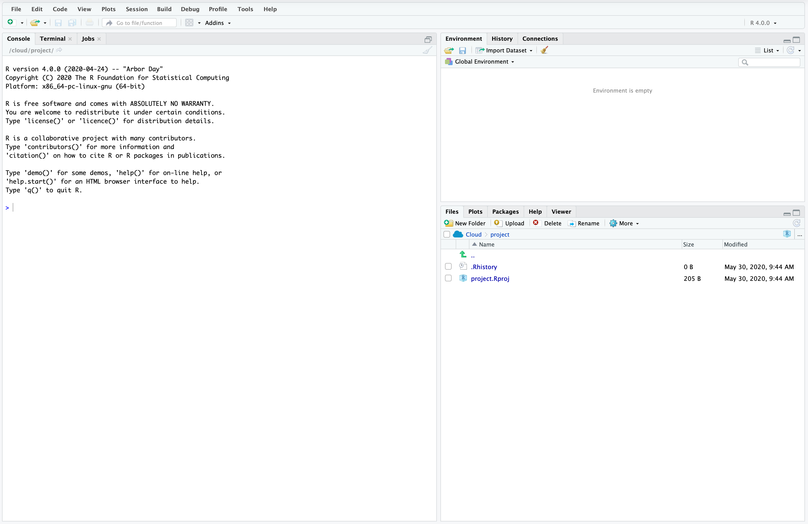
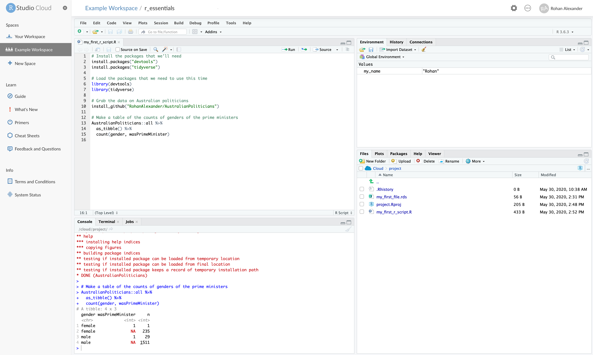
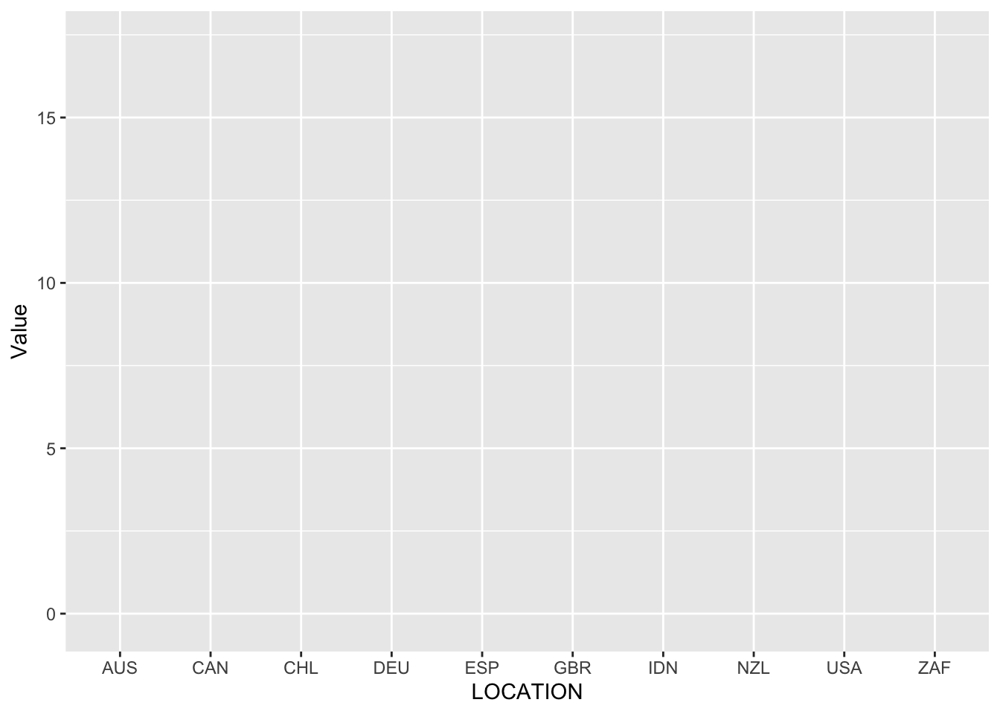
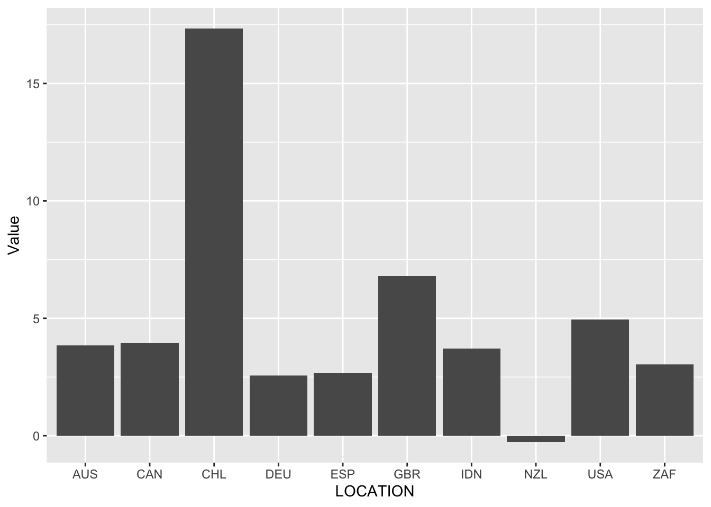
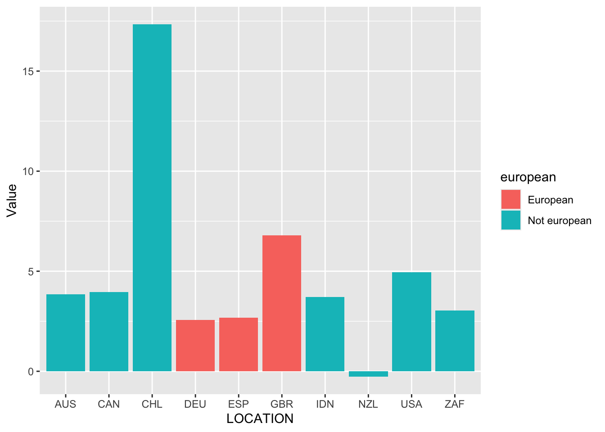
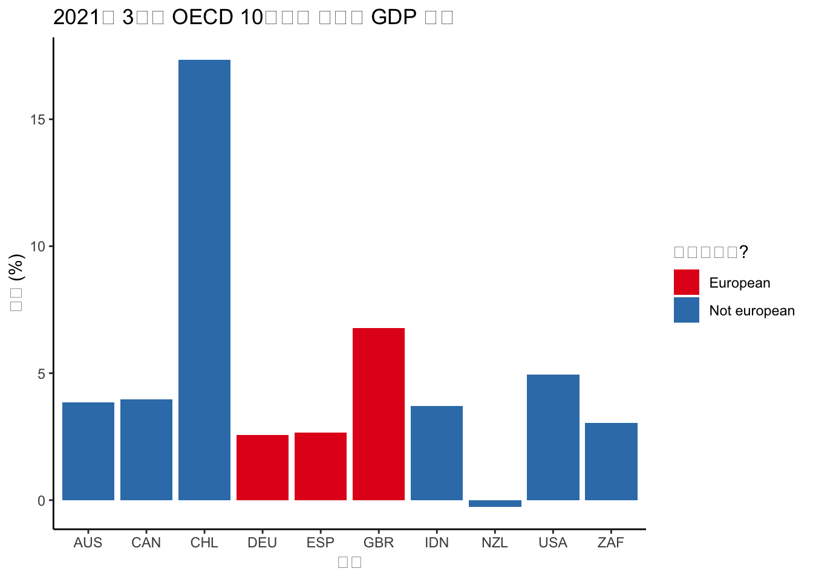
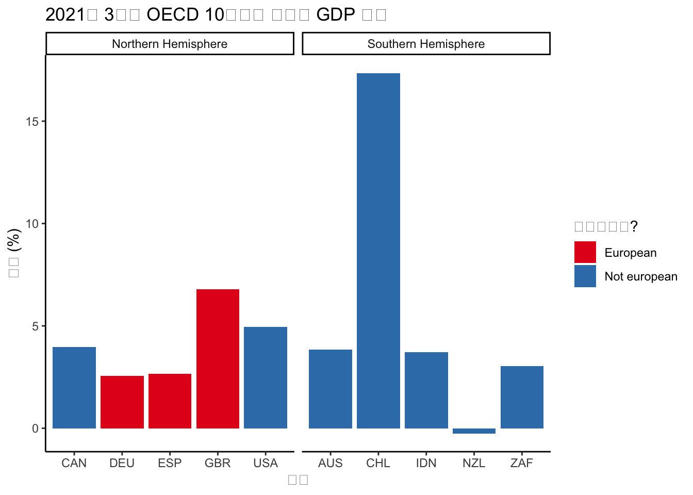
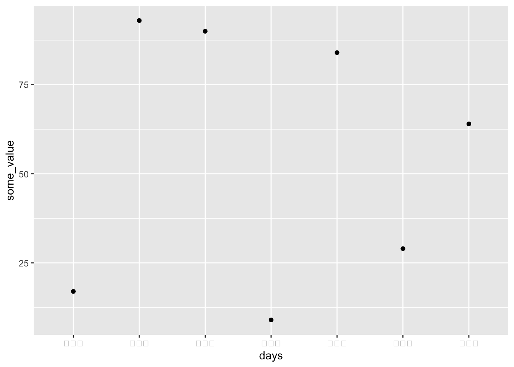
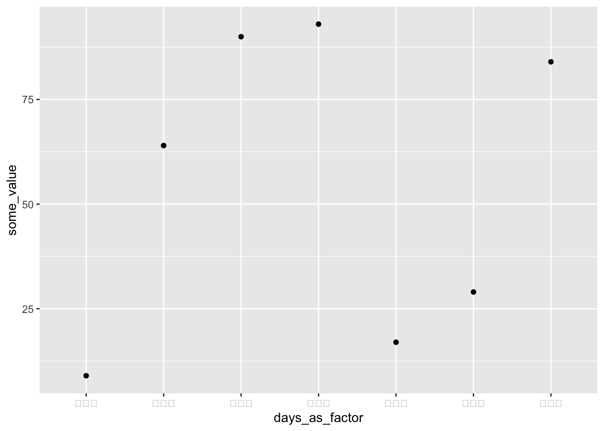

install.packages("tidyverse")Online Appendix A — R 필수 사항
선수 지식
- 데이터 과학을 위한 R, 4장 “데이터 변환”, (Wickham, Çetinkaya-Rundel, 와/과 Grolemund [2016년] 2023)
dplyr를 사용한 데이터셋 조작에 대한 개요를 제공합니다.
- 데이터 페미니즘, 6장 “숫자는 스스로 말하지 않는다”, (D’Ignazio 와/과 Klein 2020)
- 데이터를 생성한 더 넓은 맥락에서 데이터를 고려할 필요성을 논의합니다.
- R 세대, (Thieme 2018)
R에 대한 배경 정보를 제공합니다.
핵심 개념 및 기술
R및 RStudio의 기초적인 측면을 이해하면 워크플로를 점진적으로 개선할 수 있습니다. 예를 들어, 핵심dplyr동사를 사용하고ggplot2로 그래프를 만들 수 있으면 데이터셋을 조작하고 이해하기가 더 쉽습니다.- 그러나
tidyverse에는 데이터 가져오기, 데이터셋 조작, 문자열 조작 및 요인을 포함하여 엄청나게 많은 기능이 있습니다. 모든 것을 한 번에 알 필요는 없지만, 아직 모든 것을 알지 못한다는 것을 알아야 합니다. tidyverse를 넘어, 많은 언어에 공통적인 기초적인 측면이 존재하며 데이터 과학 워크플로에 추가될 수 있다는 것을 아는 것도 중요합니다. 예를 들어, 클래스, 함수 및 데이터 시뮬레이션은 모두 중요한 역할을 합니다.
소프트웨어 및 패키지
- Base
R - Core
tidyverse(Wickham 기타 2019)dplyr(Wickham 기타 2022)forcats(Wickham 2023)ggplot2(Wickham 2016)readr(Wickham, Hester, 와/과 Bryan 2022)stringr(Wickham 2022)tibble(Müller 와/과 Wickham 2022)tidyr(Wickham, Vaughan, 와/과 Girlich 2023)
- Outer
tidyverse(Wickham 기타 2019) (이들은library("haven")과 같이 별도로 로드해야 합니다)haven(Wickham, Miller, 와/과 Smith 2023)lubridate(Grolemund 와/과 Wickham 2011)
janitor(Firke 2023)
A.1 서론
이 장에서는 통계 프로그래밍 언어 R(R Core Team 2024)을 사용하여 데이터로 이야기를 하는 데 필요한 기초적인 기술에 초점을 맞춥니다. 처음에는 이해가 안 될 수도 있지만, 이것들은 우리가 자주 사용할 기술과 접근 방식입니다. 처음에는 이 장을 빠르게 훑어보고 이해가 안 되는 부분을 메모하십시오. 그런 다음 책의 나머지 부분을 계속 진행하면서 이 장으로 돌아오십시오. 그렇게 하면 다양한 부분이 어떻게 맥락에 맞는지 알 수 있을 것입니다.
R은 통계 프로그래밍을 위한 오픈 소스 언어입니다. 종합 R 아카이브 네트워크(CRAN)에서 R을 무료로 다운로드할 수 있습니다. RStudio는 R을 더 쉽게 사용할 수 있도록 하는 R용 통합 개발 환경(IDE)이며, Posit 여기에서 무료로 다운로드할 수 있습니다.
지난 10여 년은 tidyverse의 사용 증가로 특징지어졌습니다. 이것은 “…데이터 과학을 위해 설계된 R 패키지의 의견이 반영된 컬렉션입니다. 모든 패키지는 기본 설계 철학, 문법 및 데이터 구조를 공유합니다”(Wickham 2020). 세 가지 구별을 명확히 해야 합니다. 즉, 일반적으로 “base”라고 불리는 원본 R 언어; base 위에 구축된 일관된 패키지 모음인 tidyverse; 그리고 다른 패키지입니다.
본질적으로 tidyverse에서 할 수 있는 모든 것은 base에서도 할 수 있습니다. 그러나 tidyverse는 특히 데이터 과학을 위해 구축되었기 때문에 특히 학습할 때 사용하기가 더 쉽습니다. 또한 tidyverse에서 할 수 있는 대부분의 모든 것은 다른 패키지로도 할 수 있습니다. 그러나 tidyverse는 일관된 패키지 모음이므로 특히 학습할 때 사용하기가 더 쉽습니다. 결국 tidyverse의 편리함과 일관성을 base, 다른 패키지 또는 언어의 일부 기능과 교환하는 것이 합리적인 경우가 있습니다. 실제로, 장 10 에서 SQL을 데이터 작업 시 상당한 효율성 향상의 한 가지 원천으로 소개합니다. 예를 들어, tidyverse는 느릴 수 있으므로 수천 개의 CSV를 가져와야 하는 경우 read_csv()에서 벗어나는 것이 합리적일 수 있습니다. 특정 솔루션에 대한 독단적인 고집보다는 base 및 비-tidyverse 패키지 또는 언어의 적절한 사용은 지적 성숙의 신호입니다.
통계 프로그래밍 언어 R을 사용하는 데 있어 핵심은 데이터이며, 우리가 사용하는 대부분의 데이터는 인간을 중심으로 할 것입니다. 때로는 이러한 방식으로 인간 중심 데이터를 다루는 것이 무감각한 효과를 가져와 과도한 일반화 및 잠재적으로 문제가 있는 작업으로 이어질 수 있습니다. 지적 성숙의 또 다른 신호는 반대 효과를 가져와 의사 결정 과정과 그 결과에 대한 인식을 높이는 것입니다.
실제로, 나는 의미에 대한 질문에서 멀어지는 것이 아니라, 정량적 데이터가 당신에게 그것들을 직면하도록 강요한다는 것을 발견합니다. 숫자가 당신을 끌어들입니다. 이런 식으로 데이터를 다루는 것은 겸손의 끝없는 연습이며, 당신이 무엇을 보고 무엇을 볼 수 없는지 끊임없이 생각하게 하고, 측정값이 실제로 무엇을 포착하는지, 즉 그것들이 무엇을 의미하고 누구를 위한 것인지 이해하도록 끊임없이 초대합니다.
Healy (2020)
A.2 R, RStudio, 그리고 Posit Cloud
R과 RStudio는 상호 보완적이지만, 동일한 것은 아닙니다. Müller, Schieferdecker, 와/과 Schratz (2019) 은 R은 엔진과 같고 RStudio는 자동차와 같다고 비유하여 그들의 관계를 설명합니다. 우리는 엔진을 다양한 상황에서 사용할 수 있으며, 자동차에만 국한되지 않지만, 이 조합은 특히 유용합니다.
A.2.1 R
R은 일반 통계에 중점을 둔 오픈 소스 무료 프로그래밍 언어입니다. 이 맥락에서 무료는 가격이 0이라는 것을 의미하는 것이 아니라, 개발자들이 사용자에게 원하는 대로 자유롭게 사용할 수 있도록 허용한다는 것을 의미합니다(물론 가격도 0입니다). 이는 Python과 같이 범용으로 설계된 오픈 소스 프로그래밍 언어 또는 Stan과 같이 확률에 중점을 둔 오픈 소스 프로그래밍 언어와 대조됩니다. 1990년대 오클랜드 대학교의 로스 이아카와 로버트 젠틀맨이 만들었으며, 1970년대 벨 연구소에서 개발된 S에서 유래했습니다. R Core Team이 유지 관리하며, 이 “base” 코드의 변경은 체계적으로 이루어지며 다양한 우선 순위를 고려합니다.
많은 사람들이 이 안정적인 base 위에 구축하여 R의 기능을 더 잘, 더 빠르게 자신의 필요에 맞게 확장합니다. 그들은 패키지를 생성하여 이를 수행합니다. 일반적으로, 항상 그런 것은 아니지만, 패키지는 R 코드, 주로 함수 모음이며, 이를 통해 원하는 작업을 더 쉽게 수행할 수 있습니다. 이러한 패키지는 CRAN 및 Bioconductor와 같은 저장소에서 관리됩니다.
패키지를 사용하려면 먼저 컴퓨터에 설치해야 하고, 사용하고 싶을 때 로드해야 합니다. 모나쉬 대학교의 비즈니스 분석 교수인 디 쿡 박사는 이를 전구에 비유합니다. 집에 불을 켜고 싶다면 먼저 전구를 끼워야 하고, 그런 다음 스위치를 켜야 합니다. install.packages("tidyverse")와 같이 패키지를 설치하는 것은 전구를 소켓에 끼우는 것과 같습니다. 각 전구에 대해 한 번만 하면 됩니다. 그러나 불을 켜고 싶을 때마다 스위치를 켜야 합니다. R 패키지의 경우, library(tidyverse)와 같이 라이브러리를 불러오는 것을 의미합니다.
거인의 어깨 위에 서서
디 쿡 박사는 모나쉬 대학교의 통계학 특훈 교수입니다. 1993년 럿거스 대학교에서 통계 그래픽에 중점을 둔 통계학 박사 학위를 받은 후, 아이오와 주립 대학교에서 조교수로 임명되었고, 2005년 정교수로 승진했으며, 2015년 모나쉬로 옮겼습니다. 그녀의 연구 분야 중 하나는 데이터 시각화, 특히 대화형 및 동적 그래픽입니다. Buja, Cook, 와/과 Swayne (1996) 는 대화형 데이터 시각화의 분류법과 관련 소프트웨어 XGobi를 제안하며, 이는 Cook 와/과 Swayne (2007) 의 초점입니다. Cook 기타 (1995) 는 탐색적 데이터 분석을 위한 동적 그래픽 도구의 개발 및 탐색을 다루고, Buja 기타 (2009) 는 시각적 통계 방법을 평가하기 위한 프레임워크를 개발하며, 여기서 플롯과 인간 인지는 각각 테스트 통계량과 통계 테스트를 대신합니다. 그녀는 미국 통계 학회 펠로우입니다.
컴퓨터에 패키지를 설치하려면(다시, 컴퓨터당 한 번만 하면 됩니다) install.packages()를 사용합니다.
그리고 패키지를 사용하고 싶을 때는 library()를 사용합니다.
library(tidyverse)다운로드한 후 R을 열고 직접 사용할 수 있습니다. 주로 명령줄을 통해 상호 작용하도록 설계되었습니다. 이것은 기능적이지만, 명령줄이 제공하는 것보다 더 풍부한 환경을 갖는 것이 유용할 수 있습니다. 특히, 자주 사용될 다양한 비트와 조각을 모아주는 애플리케이션인 통합 개발 환경(IDE)을 설치하는 것이 유용할 수 있습니다. R에 대한 일반적인 IDE 중 하나는 RStudio이지만, Visual Studio와 같은 다른 IDE도 사용됩니다.
A.2.2 RStudio
RStudio는 R과 구별되며, 서로 다른 개체입니다. RStudio는 R 위에 구축되어 R을 더 쉽게 사용할 수 있도록 합니다. 이는 명령줄에서 인터넷을 사용할 수 있지만, 대부분의 사람들이 Chrome, Firefox 또는 Safari와 같은 브라우저를 사용하는 것과 같은 방식입니다.
RStudio는 우리가 비용을 지불하지 않는다는 의미에서 무료입니다. 또한 코드를 가져와 수정하고 배포할 수 있다는 의미에서도 무료입니다. 그러나 RStudio의 제작사인 Posit은 B Corp이긴 하지만 회사이므로 현재 상황이 변경될 수 있습니다. Posit 여기에서 다운로드할 수 있습니다.
RStudio를 열면 그림 A.1 와 같이 보일 것입니다.

왼쪽 창은 콘솔로, R 코드를 한 줄씩 입력하고 실행할 수 있습니다. 프롬프트 “>” 옆을 클릭하고 “2+2”를 입력한 다음 “return/enter”를 눌러 2+2를 시도해 보십시오.
2 + 2[1] 4오른쪽 상단 창에는 환경에 대한 정보가 있습니다. 예를 들어, 변수를 만들면 변수 이름과 일부 속성 목록이 거기에 나타납니다. 프롬프트 옆에 다음 코드를 입력하고, Rohan을 자신의 이름으로 바꾼 다음, 다시 엔터를 누르십시오.
my_name <- "로한"장 2 에서 언급했듯이 <- 또는 “할당 연산자”는 "로한"을 “my_name”이라는 객체에 할당합니다. 변수 이름과 값이 있는 환경 창에 새 값이 나타나는 것을 알 수 있을 것입니다.
오른쪽 하단 창은 파일 관리자입니다. 현재는 R 기록 파일과 R 프로젝트 파일 두 개만 있어야 합니다. 나중에 이것들이 무엇인지 알아볼 것이지만, 지금은 파일을 만들고 저장할 것입니다.
자세한 내용은 너무 걱정하지 말고 다음 코드를 실행하십시오. 파일 목록에 새 “.rds” 파일이 나타나는 것을 볼 수 있을 것입니다.
saveRDS(object = my_name, file = "my_first_file.rds")A.2.3 Posit Cloud
RStudio를 자신의 컴퓨터에 다운로드해야 하지만, 처음에는 Posit Cloud를 사용하는 것을 권장합니다. 이것은 Posit에서 제공하는 RStudio의 온라인 버전입니다. 우리는 이것을 사용하여 R과 RStudio에 일관된 환경에서 익숙해질 수 있도록 할 것입니다. 이렇게 하면 컴퓨터나 설치 권한 등에 대해 걱정할 필요가 없습니다.
Posit Cloud의 무료 버전은 재정적 비용이 없다는 의미에서 무료입니다. 단점은 강력하지 않고 때로는 느리다는 것이지만, 시작하는 데는 충분합니다.
A.3 시작하기
이제 코드를 살펴보겠습니다. 직접 모든 것을 작성하십시오.
콘솔에서 한 줄씩 작업하는 것도 괜찮지만, 전체 스크립트를 작성한 다음 실행하는 것이 더 쉽습니다. R 스크립트(“파일” \(\rightarrow\) “새 파일” \(\rightarrow\) “R 스크립트”)를 만들어 이를 수행할 것입니다. 콘솔 창은 왼쪽 하단으로 이동하고 R 스크립트가 왼쪽 상단에 열릴 것입니다. 호주 연방 정치인 전체를 가져온 다음 총리의 성별에 대한 작은 표를 만드는 코드를 작성할 것입니다. 이 코드 중 일부는 이 단계에서는 이해가 안 될 수도 있지만, 습관을 들이기 위해 모두 입력한 다음 실행하십시오. 전체 스크립트를 실행하려면 “실행”을 클릭하거나 특정 줄을 강조 표시한 다음 “실행”을 클릭하여 해당 줄만 실행할 수 있습니다.
# 필요한 패키지 설치
install.packages("tidyverse")
install.packages("AustralianPoliticians")# 이번에 사용할 패키지 로드
library(tidyverse)
library(AustralianPoliticians)
# 총리의 성별 개수 표 만들기
get_auspol("all") |> # GitHub에서 데이터 가져오기
as_tibble() |>
filter(wasPrimeMinister == 1) |>
count(gender)# A tibble: 2 × 2
gender n
<chr> <int>
1 female 1
2 male 292021년 말 기준으로 여성 총리는 한 명(줄리아 길라드)이었고, 나머지 29명의 총리는 남성이었습니다.
프로그래밍에서 중요한 연산자 중 하나는 “파이프”: |>. 우리는 이것을 “그리고 나서”라고 읽습니다. 이것은 코드 줄의 출력을 가져와 다음 코드 줄의 첫 번째 입력으로 사용합니다. 코드를 더 읽기 쉽게 만듭니다. 배경 지식으로, 수년 동안 R 사용자들은 magrittr(Bache 와/과 Wickham 2022)에서 온 %>%를 파이프로 사용했으며, 이는 tidyverse의 일부입니다. Base R은 2021년에 우리가 이 책에서 사용하는 파이프 |>를 추가했으므로, 오래된 코드를 보면 이전 파이프가 사용되는 것을 볼 수 있습니다. 대부분의 경우, 서로 교환 가능합니다.
파이프의 아이디어는 데이터셋을 가져와서 무언가를 하는 것입니다. 우리는 이전 예시에서 이것을 사용했습니다. 다음은 head()에 파이프하여 데이터셋의 처음 6줄을 살펴보는 또 다른 예시입니다. head()는 이 예시에서 명시적으로 인수를 취하지 않는다는 점에 유의하십시오. 파이프가 암시적으로 표시할 데이터를 알려주기 때문에 어떤 데이터를 표시할지 알고 있습니다.
get_auspol("all") |> # GitHub에서 데이터 가져오기
head()# A tibble: 6 × 20
uniqueID surname allOtherNames firstName commonName displayName
<chr> <chr> <chr> <chr> <chr> <chr>
1 Abbott1859 Abbott Richard Hartley Smith Richard <NA> Abbott, Richard
2 Abbott1869 Abbott Percy Phipps Percy <NA> Abbott, Percy
3 Abbott1877 Abbott Macartney Macartney Mac Abbott, Mac
4 Abbott1886 Abbott Charles Lydiard Aubrey Charles Aubrey Abbott, Aubrey
5 Abbott1891 Abbott Joseph Palmer Joseph <NA> Abbott, Joseph
6 Abbott1957 Abbott Anthony John Anthony Tony Abbott, Tony
# ℹ 14 more variables: earlierOrLaterNames <chr>, title <chr>, gender <chr>,
# birthDate <date>, birthYear <dbl>, birthPlace <chr>, deathDate <date>,
# member <dbl>, senator <dbl>, wasPrimeMinister <dbl>, wikidataID <chr>,
# wikipedia <chr>, adb <chr>, comments <chr>이 R 스크립트를 “my_first_r_script.R”로 저장할 수 있습니다(“파일” \(\rightarrow\) “다른 이름으로 저장”). 이 시점에서 작업 공간은 그림 A.2 와 같이 보일 것입니다.

R 스크립트 실행 후
각 Posit Cloud 작업 공간은 본질적으로 새로운 컴퓨터라는 점을 알아두십시오. 이 때문에 각 작업 공간에서 사용하려는 모든 패키지를 설치해야 합니다. 예를 들어, tidyverse를 사용하기 전에 install.packages("tidyverse")로 설치해야 합니다. 이는 자신의 컴퓨터를 사용하는 것과 대조됩니다.
Posit Cloud에 대한 몇 가지 마지막 참고 사항:
- 호주 정치인 예시에서 우리는 GitHub 웹사이트에서
R패키지를 사용하여 데이터를 가져왔지만, 다양한 방법으로 로컬 컴퓨터에서 작업 공간으로 데이터를 가져올 수 있습니다. 한 가지 방법은 “파일” 패널의 “업로드” 버튼을 사용하는 것입니다. 다른 방법은tidyverse(Wickham 기타 2019)의 일부인readr(Wickham, Hester, 와/과 Bryan 2022)를 사용하는 것입니다. - Posit Cloud는 어느 정도의 협업을 허용합니다. 예를 들어, 다른 사람에게 자신이 만든 작업 공간에 대한 접근 권한을 부여하고 동시에 동일한 작업 공간에 있을 수도 있습니다. 이는 협업에 유용할 수 있습니다.
- Posit Cloud에는 다양한 약점이 있습니다. 특히 RAM 제한이 있습니다. 또한, 다른 웹 애플리케이션과 마찬가지로 때때로 문제가 발생하거나 중단될 수 있습니다.
A.4 dplyr 동사
데이터 조작 측면에서 우리가 사용할 핵심 패키지 중 하나는 tidyverse(Wickham 기타 2019)입니다. tidyverse는 실제로 패키지 모음이며, 이는 tidyverse를 설치할 때 실제로 많은 다른 패키지를 설치한다는 것을 의미합니다. 데이터 조작 측면에서 tidyverse의 핵심 패키지는 dplyr(Wickham 기타 2022)입니다.
정기적으로 사용되는 다섯 가지 dplyr 함수가 있으며, 이제 각각을 살펴보겠습니다. 이들은 일반적으로 dplyr 동사라고 불립니다.
select()filter()arrange()mutate()summarise()또는summarize()
또한 밀접하게 관련된 .by와 count()도 다룰 것입니다.
tidyverse를 이미 설치했으므로 로드하기만 하면 됩니다.
그리고 AustralianPoliticians 패키지(Alexander 와/과 Hodgetts 2021)의 호주 정치인에 대한 데이터를 다시 사용하는 것으로 시작하겠습니다.
library(AustralianPoliticians)
australian_politicians <-
get_auspol("all")
head(australian_politicians)# A tibble: 6 × 20
uniqueID surname allOtherNames firstName commonName displayName
<chr> <chr> <chr> <chr> <chr> <chr>
1 Abbott1859 Abbott Richard Hartley Smith Richard <NA> Abbott, Richard
2 Abbott1869 Abbott Percy Phipps Percy <NA> Abbott, Percy
3 Abbott1877 Abbott Macartney Macartney Mac Abbott, Mac
4 Abbott1886 Abbott Charles Lydiard Aubrey Charles Aubrey Abbott, Aubrey
5 Abbott1891 Abbott Joseph Palmer Joseph <NA> Abbott, Joseph
6 Abbott1957 Abbott Anthony John Anthony Tony Abbott, Tony
# ℹ 14 more variables: earlierOrLaterNames <chr>, title <chr>, gender <chr>,
# birthDate <date>, birthYear <dbl>, birthPlace <chr>, deathDate <date>,
# member <dbl>, senator <dbl>, wasPrimeMinister <dbl>, wikidataID <chr>,
# wikipedia <chr>, adb <chr>, comments <chr>A.4.1 select()
데이터셋의 특정 열을 선택하려면 select()를 사용합니다. 예를 들어, “firstName” 열을 선택하고 싶을 수 있습니다.
australian_politicians |>
select(firstName)# A tibble: 1,783 × 1
firstName
<chr>
1 Richard
2 Percy
3 Macartney
4 Charles
5 Joseph
6 Anthony
7 John
8 Eric
9 Judith
10 Dick
# ℹ 1,773 more rowsR에는 작업을 수행하는 여러 가지 방법이 있습니다. 때로는 동일한 작업을 수행하는 다른 방법이 있고, 때로는 거의 동일한 작업을 수행하는 다른 방법이 있습니다. 예를 들어, 데이터셋의 특정 열을 선택하는 또 다른 방법은 “추출” 연산자 $를 사용하는 것입니다. 이것은 select()와 달리 base에서 온 것입니다.
australian_politicians$firstName |>
head()[1] "Richard" "Percy" "Macartney" "Charles" "Joseph" "Anthony" 두 가지는 비슷해 보입니다. 둘 다 “firstName” 열을 선택하지만, 반환하는 것의 클래스가 다릅니다. select()는 티블을 반환하고 $는 벡터를 반환합니다. 완전성을 위해 select()와 pull()을 결합하면 추출 연산자를 사용한 것과 동일한 클래스의 출력, 즉 벡터를 얻습니다.
australian_politicians |>
select(firstName) |>
pull() |>
head()[1] "Richard" "Percy" "Macartney" "Charles" "Joseph" "Anthony" 열 이름을 부정하여 select()를 사용하여 열을 제거할 수도 있습니다.
australian_politicians |>
select(-firstName)# A tibble: 1,783 × 19
uniqueID surname allOtherNames commonName displayName earlierOrLaterNames
<chr> <chr> <chr> <chr> <chr> <chr>
1 Abbott1859 Abbott Richard Hartle… <NA> Abbott, Ri… <NA>
2 Abbott1869 Abbott Percy Phipps <NA> Abbott, Pe… <NA>
3 Abbott1877 Abbott Macartney Mac Abbott, Mac <NA>
4 Abbott1886 Abbott Charles Lydiar… Aubrey Abbott, Au… <NA>
5 Abbott1891 Abbott Joseph Palmer <NA> Abbott, Jo… <NA>
6 Abbott1957 Abbott Anthony John Tony Abbott, To… <NA>
7 Abel1939 Abel John Arthur <NA> Abel, John <NA>
8 Abetz1958 Abetz Eric <NA> Abetz, Eric <NA>
9 Adams1943 Adams Judith Anne <NA> Adams, Jud… nee Bird
10 Adams1951 Adams Dick Godfrey H… <NA> Adams, Dick <NA>
# ℹ 1,773 more rows
# ℹ 13 more variables: title <chr>, gender <chr>, birthDate <date>,
# birthYear <dbl>, birthPlace <chr>, deathDate <date>, member <dbl>,
# senator <dbl>, wasPrimeMinister <dbl>, wikidataID <chr>, wikipedia <chr>,
# adb <chr>, comments <chr>마지막으로, 조건을 기반으로 select()할 수 있습니다. 예를 들어, “birth”로 시작하는 모든 열을 select()할 수 있습니다.
australian_politicians |>
select(starts_with("birth"))# A tibble: 1,783 × 3
birthDate birthYear birthPlace
<date> <dbl> <chr>
1 NA 1859 Bendigo
2 1869-05-14 NA Hobart
3 1877-07-03 NA Murrurundi
4 1886-01-04 NA St Leonards
5 1891-10-18 NA North Sydney
6 1957-11-04 NA London
7 1939-06-25 NA Sydney
8 1958-01-25 NA Stuttgart
9 1943-04-11 NA Picton
10 1951-04-29 NA Launceston
# ℹ 1,773 more rowsstarts_with(), ends_with(), contains()를 포함한 다양한 유사한 “선택 도우미”가 있습니다. 이에 대한 자세한 정보는 ?select()를 실행하여 접근할 수 있는 select()의 도움말 페이지에서 확인할 수 있습니다.
이 시점에서 select()를 사용하여 데이터셋의 너비를 줄일 것입니다.
australian_politicians <-
australian_politicians |>
select(
uniqueID,
surname,
firstName,
gender,
birthDate,
birthYear,
deathDate,
member,
senator,
wasPrimeMinister
)
australian_politicians# A tibble: 1,783 × 10
uniqueID surname firstName gender birthDate birthYear deathDate member
<chr> <chr> <chr> <chr> <date> <dbl> <date> <dbl>
1 Abbott1859 Abbott Richard male NA 1859 1940-02-28 0
2 Abbott1869 Abbott Percy male 1869-05-14 NA 1940-09-09 1
3 Abbott1877 Abbott Macartney male 1877-07-03 NA 1960-12-30 0
4 Abbott1886 Abbott Charles male 1886-01-04 NA 1975-04-30 1
5 Abbott1891 Abbott Joseph male 1891-10-18 NA 1965-05-07 1
6 Abbott1957 Abbott Anthony male 1957-11-04 NA NA 1
7 Abel1939 Abel John male 1939-06-25 NA NA 1
8 Abetz1958 Abetz Eric male 1958-01-25 NA NA 0
9 Adams1943 Adams Judith female 1943-04-11 NA 2012-03-31 0
10 Adams1951 Adams Dick male 1951-04-29 NA NA 1
# ℹ 1,773 more rows
# ℹ 2 more variables: senator <dbl>, wasPrimeMinister <dbl>R을 처음 사용하는 사람들을 혼란스럽게 하는 한 가지는 출력이 객체에 할당되지 않으면 “저장”되지 않는다는 것입니다. 예를 들어, 여기서는 첫 줄이 australian_politicians <- australian_politicians |>이고, 그 다음 select()가 사용됩니다. australian_politicians |>와 비교됩니다. 이렇게 하면 select()에 의해 발생한 변경 사항이 객체에 적용되므로, 코드의 나중에 해당 수정된 버전이 사용됩니다.
A.4.2 filter()
데이터셋의 특정 행을 선택하려면 filter()를 사용합니다. 예를 들어, 총리가 된 정치인에게만 관심이 있을 수 있습니다.
australian_politicians |>
filter(wasPrimeMinister == 1)# A tibble: 30 × 10
uniqueID surname firstName gender birthDate birthYear deathDate member
<chr> <chr> <chr> <chr> <date> <dbl> <date> <dbl>
1 Abbott1957 Abbott Anthony male 1957-11-04 NA NA 1
2 Barton1849 Barton Edmund male 1849-01-18 NA 1920-01-07 1
3 Bruce1883 Bruce Stanley male 1883-04-15 NA 1967-08-25 1
4 Chifley1885 Chifley Joseph male 1885-09-22 NA 1951-06-13 1
5 Cook1860 Cook Joseph male 1860-12-07 NA 1947-07-30 1
6 Curtin1885 Curtin John male 1885-01-08 NA 1945-07-05 1
7 Deakin1856 Deakin Alfred male 1856-08-03 NA 1919-10-07 1
8 Fadden1894 Fadden Arthur male 1894-04-13 NA 1973-04-21 1
9 Fisher1862 Fisher Andrew male 1862-08-29 NA 1928-10-22 1
10 Forde1890 Forde Francis male 1890-07-18 NA 1983-01-28 1
# ℹ 20 more rows
# ℹ 2 more variables: senator <dbl>, wasPrimeMinister <dbl>filter()에 두 가지 조건을 줄 수도 있습니다. 예를 들어, 총리가 되었고 이름이 조셉인 정치인을 “and” 연산자 &를 사용하여 찾을 수 있습니다.
australian_politicians |>
filter(wasPrimeMinister == 1 & firstName == "Joseph")# A tibble: 3 × 10
uniqueID surname firstName gender birthDate birthYear deathDate member
<chr> <chr> <chr> <chr> <date> <dbl> <date> <dbl>
1 Chifley1885 Chifley Joseph male 1885-09-22 NA 1951-06-13 1
2 Cook1860 Cook Joseph male 1860-12-07 NA 1947-07-30 1
3 Lyons1879 Lyons Joseph male 1879-09-15 NA 1939-04-07 1
# ℹ 2 more variables: senator <dbl>, wasPrimeMinister <dbl>앰퍼샌드 대신 쉼표를 사용해도 동일한 결과를 얻습니다.
australian_politicians |>
filter(wasPrimeMinister == 1, firstName == "Joseph")# A tibble: 3 × 10
uniqueID surname firstName gender birthDate birthYear deathDate member
<chr> <chr> <chr> <chr> <date> <dbl> <date> <dbl>
1 Chifley1885 Chifley Joseph male 1885-09-22 NA 1951-06-13 1
2 Cook1860 Cook Joseph male 1860-12-07 NA 1947-07-30 1
3 Lyons1879 Lyons Joseph male 1879-09-15 NA 1939-04-07 1
# ℹ 2 more variables: senator <dbl>, wasPrimeMinister <dbl>마찬가지로, “or” 연산자 |를 사용하여 마일스 또는 루스라는 이름의 정치인을 찾을 수 있습니다.
australian_politicians |>
filter(firstName == "Myles" | firstName == "Ruth")# A tibble: 3 × 10
uniqueID surname firstName gender birthDate birthYear deathDate member
<chr> <chr> <chr> <chr> <date> <dbl> <date> <dbl>
1 Coleman1931 Coleman Ruth female 1931-09-27 NA 2008-03-27 0
2 Ferricks1875 Ferricks Myles male 1875-11-12 NA 1932-08-20 0
3 Webber1965 Webber Ruth female 1965-03-24 NA NA 0
# ℹ 2 more variables: senator <dbl>, wasPrimeMinister <dbl>결과를 파이프할 수도 있습니다. 예를 들어, filter()에서 select()로 파이프할 수 있습니다.
australian_politicians |>
filter(firstName == "Ruth" | firstName == "Myles") |>
select(firstName, surname)# A tibble: 3 × 2
firstName surname
<chr> <chr>
1 Ruth Coleman
2 Myles Ferricks
3 Ruth Webber 관심 있는 특정 행 번호를 알고 있다면 해당 행만 filter()할 수 있습니다. 예를 들어, 853번 행에 관심이 있다고 가정해 봅시다.
australian_politicians |>
filter(row_number() == 853)# A tibble: 1 × 10
uniqueID surname firstName gender birthDate birthYear deathDate member
<chr> <chr> <chr> <chr> <date> <dbl> <date> <dbl>
1 Jakobsen1947 Jakobsen Carolyn female 1947-09-11 NA NA 1
# ℹ 2 more variables: senator <dbl>, wasPrimeMinister <dbl>이를 수행하는 전용 함수도 있습니다. 즉, slice()입니다.
australian_politicians |>
slice(853)# A tibble: 1 × 10
uniqueID surname firstName gender birthDate birthYear deathDate member
<chr> <chr> <chr> <chr> <date> <dbl> <date> <dbl>
1 Jakobsen1947 Jakobsen Carolyn female 1947-09-11 NA NA 1
# ℹ 2 more variables: senator <dbl>, wasPrimeMinister <dbl>이것은 다소 난해해 보일 수 있지만, 부정을 사용하여 특정 행을 제거하거나 특정 행을 복제하려는 경우 특히 유용합니다. 예를 들어, 첫 번째 행을 제거할 수 있습니다.
australian_politicians |>
slice(-1)# A tibble: 1,782 × 10
uniqueID surname firstName gender birthDate birthYear deathDate member
<chr> <chr> <chr> <chr> <date> <dbl> <date> <dbl>
1 Abbott1869 Abbott Percy male 1869-05-14 NA 1940-09-09 1
2 Abbott1877 Abbott Macartney male 1877-07-03 NA 1960-12-30 0
3 Abbott1886 Abbott Charles male 1886-01-04 NA 1975-04-30 1
4 Abbott1891 Abbott Joseph male 1891-10-18 NA 1965-05-07 1
5 Abbott1957 Abbott Anthony male 1957-11-04 NA NA 1
6 Abel1939 Abel John male 1939-06-25 NA NA 1
7 Abetz1958 Abetz Eric male 1958-01-25 NA NA 0
8 Adams1943 Adams Judith female 1943-04-11 NA 2012-03-31 0
9 Adams1951 Adams Dick male 1951-04-29 NA NA 1
10 Adamson1857 Adamson John male 1857-02-18 NA 1922-05-02 0
# ℹ 1,772 more rows
# ℹ 2 more variables: senator <dbl>, wasPrimeMinister <dbl>또한, 예를 들어, 처음 세 행만 유지할 수도 있습니다.
australian_politicians |>
slice(1:3)# A tibble: 3 × 10
uniqueID surname firstName gender birthDate birthYear deathDate member
<chr> <chr> <chr> <chr> <date> <dbl> <date> <dbl>
1 Abbott1859 Abbott Richard male NA 1859 1940-02-28 0
2 Abbott1869 Abbott Percy male 1869-05-14 NA 1940-09-09 1
3 Abbott1877 Abbott Macartney male 1877-07-03 NA 1960-12-30 0
# ℹ 2 more variables: senator <dbl>, wasPrimeMinister <dbl>마지막으로, 처음 두 행을 복제할 수 있으며, 이는 현재 그룹 크기를 제공하는 n()을 활용합니다.
australian_politicians |>
slice(1:2, 1:n())# A tibble: 1,785 × 10
uniqueID surname firstName gender birthDate birthYear deathDate member
<chr> <chr> <chr> <chr> <date> <dbl> <date> <dbl>
1 Abbott1859 Abbott Richard male NA 1859 1940-02-28 0
2 Abbott1869 Abbott Percy male 1869-05-14 NA 1940-09-09 1
3 Abbott1859 Abbott Richard male NA 1859 1940-02-28 0
4 Abbott1869 Abbott Percy male 1869-05-14 NA 1940-09-09 1
5 Abbott1877 Abbott Macartney male 1877-07-03 NA 1960-12-30 0
6 Abbott1886 Abbott Charles male 1886-01-04 NA 1975-04-30 1
7 Abbott1891 Abbott Joseph male 1891-10-18 NA 1965-05-07 1
8 Abbott1957 Abbott Anthony male 1957-11-04 NA NA 1
9 Abel1939 Abel John male 1939-06-25 NA NA 1
10 Abetz1958 Abetz Eric male 1958-01-25 NA NA 0
# ℹ 1,775 more rows
# ℹ 2 more variables: senator <dbl>, wasPrimeMinister <dbl>A.4.3 arrange()
특정 열의 값을 기반으로 데이터셋의 순서를 변경하려면 arrange()를 사용합니다. 예를 들어, 정치인들을 생년월일순으로 정렬할 수 있습니다.
australian_politicians |>
arrange(birthYear)# A tibble: 1,783 × 10
uniqueID surname firstName gender birthDate birthYear deathDate member
<chr> <chr> <chr> <chr> <date> <dbl> <date> <dbl>
1 Edwards1842 Edwards Richard male NA 1842 1915-10-29 1
2 Sawers1844 Sawers William male NA 1844 1916-05-19 1
3 Barker1846 Barker Stephen male NA 1846 1924-06-21 0
4 Corser1852 Corser Edward male NA 1852 1928-07-31 1
5 Lee1856 Lee Henry male NA 1856 1927-08-12 1
6 Grant1857 Grant John male NA 1857 1928-05-19 0
7 Abbott1859 Abbott Richard male NA 1859 1940-02-28 0
8 Palmer1859 Palmer Albert male NA 1859 1919-08-14 1
9 Riley1859 Riley Edward male NA 1859 1943-07-21 1
10 Kennedy1860 Kennedy Thomas male NA 1860 1929-02-16 1
# ℹ 1,773 more rows
# ℹ 2 more variables: senator <dbl>, wasPrimeMinister <dbl>desc()를 사용하여 arrange()를 수정하여 오름차순에서 내림차순으로 변경할 수 있습니다.
australian_politicians |>
arrange(desc(birthYear))# A tibble: 1,783 × 10
uniqueID surname firstName gender birthDate birthYear deathDate member
<chr> <chr> <chr> <chr> <date> <dbl> <date> <dbl>
1 McBain1982 McBain Kristy female 1982-09-29 1982 NA 1
2 Cox1977 Cox Dorinda female NA 1977 NA 0
3 Thorpe1973 Thorpe Lidia female 1973-08-18 1973 NA 0
4 McLachlan1966 McLach… Andrew male 1966-01-14 1966 NA 0
5 Wortley1959 Wortley Dana female NA 1959 NA 0
6 Baker1903 Baker Francis male NA 1903 1939-03-28 1
7 Clay1900 Clay Lionel male NA 1900 1965-04-16 1
8 Breen1898 Breen John male NA 1898 1966-02-05 1
9 Clasby1891 Clasby John male NA 1891 1932-01-15 1
10 Gander1888 Gander Joseph male NA 1888 1954-11-22 1
# ℹ 1,773 more rows
# ℹ 2 more variables: senator <dbl>, wasPrimeMinister <dbl>빼기 기호를 사용해도 동일한 결과를 얻을 수 있습니다.
australian_politicians |>
arrange(-birthYear)# A tibble: 1,783 × 10
uniqueID surname firstName gender birthDate birthYear deathDate member
<chr> <chr> <chr> <chr> <date> <dbl> <date> <dbl>
1 McBain1982 McBain Kristy female 1982-09-29 1982 NA 1
2 Cox1977 Cox Dorinda female NA 1977 NA 0
3 Thorpe1973 Thorpe Lidia female 1973-08-18 1973 NA 0
4 McLachlan1966 McLach… Andrew male 1966-01-14 1966 NA 0
5 Wortley1959 Wortley Dana female NA 1959 NA 0
6 Baker1903 Baker Francis male NA 1903 1939-03-28 1
7 Clay1900 Clay Lionel male NA 1900 1965-04-16 1
8 Breen1898 Breen John male NA 1898 1966-02-05 1
9 Clasby1891 Clasby John male NA 1891 1932-01-15 1
10 Gander1888 Gander Joseph male NA 1888 1954-11-22 1
# ℹ 1,773 more rows
# ℹ 2 more variables: senator <dbl>, wasPrimeMinister <dbl>그리고 하나 이상의 열을 기준으로 정렬할 수도 있습니다. 예를 들어, 두 정치인이 동일한 이름을 가지고 있다면, 생년월일을 기준으로도 정렬할 수 있습니다.
australian_politicians |>
arrange(firstName, birthYear)# A tibble: 1,783 × 10
uniqueID surname firstName gender birthDate birthYear deathDate member
<chr> <chr> <chr> <chr> <date> <dbl> <date> <dbl>
1 Blain1894 Blain Adair male 1894-11-21 NA 1983-04-28 1
2 Armstrong1909 Armstr… Adam male 1909-07-01 NA 1982-02-22 1
3 Bandt1972 Bandt Adam male 1972-03-11 NA NA 1
4 Dein1889 Dein Adam male 1889-03-04 NA 1969-05-09 1
5 Ridgeway1962 Ridgew… Aden male 1962-09-18 NA NA 0
6 Bennett1933 Bennett Adrian male 1933-01-21 NA 2006-05-09 1
7 Gibson1935 Gibson Adrian male 1935-11-03 NA 2015-04-30 1
8 Wynne1850 Wynne Agar male 1850-01-15 NA 1934-05-12 1
9 Robertson1882 Robert… Agnes female 1882-07-31 NA 1968-01-29 0
10 Bird1906 Bird Alan male 1906-09-28 NA 1962-07-21 1
# ℹ 1,773 more rows
# ℹ 2 more variables: senator <dbl>, wasPrimeMinister <dbl>두 개의 arrange() 인스턴스 사이에 파이프를 사용하여 동일한 결과를 얻을 수 있습니다.
australian_politicians |>
arrange(birthYear) |>
arrange(firstName)# A tibble: 1,783 × 10
uniqueID surname firstName gender birthDate birthYear deathDate member
<chr> <chr> <chr> <chr> <date> <dbl> <date> <dbl>
1 Blain1894 Blain Adair male 1894-11-21 NA 1983-04-28 1
2 Armstrong1909 Armstr… Adam male 1909-07-01 NA 1982-02-22 1
3 Bandt1972 Bandt Adam male 1972-03-11 NA NA 1
4 Dein1889 Dein Adam male 1889-03-04 NA 1969-05-09 1
5 Ridgeway1962 Ridgew… Aden male 1962-09-18 NA NA 0
6 Bennett1933 Bennett Adrian male 1933-01-21 NA 2006-05-09 1
7 Gibson1935 Gibson Adrian male 1935-11-03 NA 2015-04-30 1
8 Wynne1850 Wynne Agar male 1850-01-15 NA 1934-05-12 1
9 Robertson1882 Robert… Agnes female 1882-07-31 NA 1968-01-29 0
10 Bird1906 Bird Alan male 1906-09-28 NA 1962-07-21 1
# ℹ 1,773 more rows
# ℹ 2 more variables: senator <dbl>, wasPrimeMinister <dbl>arrange()를 사용할 때는 우선순위를 명확히 해야 합니다. 예를 들어, 생년월일 다음에 이름을 기준으로 변경하면 다른 정렬이 됩니다.
australian_politicians |>
arrange(birthYear, firstName)# A tibble: 1,783 × 10
uniqueID surname firstName gender birthDate birthYear deathDate member
<chr> <chr> <chr> <chr> <date> <dbl> <date> <dbl>
1 Edwards1842 Edwards Richard male NA 1842 1915-10-29 1
2 Sawers1844 Sawers William male NA 1844 1916-05-19 1
3 Barker1846 Barker Stephen male NA 1846 1924-06-21 0
4 Corser1852 Corser Edward male NA 1852 1928-07-31 1
5 Lee1856 Lee Henry male NA 1856 1927-08-12 1
6 Grant1857 Grant John male NA 1857 1928-05-19 0
7 Palmer1859 Palmer Albert male NA 1859 1919-08-14 1
8 Riley1859 Riley Edward male NA 1859 1943-07-21 1
9 Abbott1859 Abbott Richard male NA 1859 1940-02-28 0
10 Kennedy1860 Kennedy Thomas male NA 1860 1929-02-16 1
# ℹ 1,773 more rows
# ℹ 2 more variables: senator <dbl>, wasPrimeMinister <dbl>다양한 열을 기준으로 정렬하는 좋은 방법은 across()를 사용하는 것입니다. 이는 select()와 관련하여 언급된 starts_with()와 같은 “선택 도우미”를 사용할 수 있게 해줍니다.
australian_politicians |>
arrange(across(c(firstName, birthYear)))# A tibble: 1,783 × 10
uniqueID surname firstName gender birthDate birthYear deathDate member
<chr> <chr> <chr> <chr> <date> <dbl> <date> <dbl>
1 Blain1894 Blain Adair male 1894-11-21 NA 1983-04-28 1
2 Armstrong1909 Armstr… Adam male 1909-07-01 NA 1982-02-22 1
3 Bandt1972 Bandt Adam male 1972-03-11 NA NA 1
4 Dein1889 Dein Adam male 1889-03-04 NA 1969-05-09 1
5 Ridgeway1962 Ridgew… Aden male 1962-09-18 NA NA 0
6 Bennett1933 Bennett Adrian male 1933-01-21 NA 2006-05-09 1
7 Gibson1935 Gibson Adrian male 1935-11-03 NA 2015-04-30 1
8 Wynne1850 Wynne Agar male 1850-01-15 NA 1934-05-12 1
9 Robertson1882 Robert… Agnes female 1882-07-31 NA 1968-01-29 0
10 Bird1906 Bird Alan male 1906-09-28 NA 1962-07-21 1
# ℹ 1,773 more rows
# ℹ 2 more variables: senator <dbl>, wasPrimeMinister <dbl>australian_politicians |>
arrange(across(starts_with("birth")))# A tibble: 1,783 × 10
uniqueID surname firstName gender birthDate birthYear deathDate member
<chr> <chr> <chr> <chr> <date> <dbl> <date> <dbl>
1 Braddon1829 Braddon Edward male 1829-06-11 NA 1904-02-02 1
2 Ferguson1830 Ferguson John male 1830-03-15 NA 1906-03-30 0
3 Zeal1830 Zeal William male 1830-12-05 NA 1912-03-11 0
4 Fraser1832 Fraser Simon male 1832-08-21 NA 1919-07-30 0
5 Groom1833 Groom William male 1833-03-09 NA 1901-08-08 1
6 Sargood1834 Sargood Frederick male 1834-05-30 NA 1903-01-02 0
7 Fysh1835 Fysh Philip male 1835-03-01 NA 1919-12-20 1
8 Playford1837 Playford Thomas male 1837-11-26 NA 1915-04-19 0
9 Solomon1839 Solomon Elias male 1839-09-02 NA 1909-05-23 1
10 McLean1840 McLean Allan male 1840-02-03 NA 1911-07-13 1
# ℹ 1,773 more rows
# ℹ 2 more variables: senator <dbl>, wasPrimeMinister <dbl>A.4.4 mutate()
새 열을 만들고 싶을 때 mutate()를 사용합니다. 예를 들어, 어떤 사람이 의원이자 상원 의원인 경우 1이고 그렇지 않으면 0인 새 열을 만들고 싶을 수 있습니다. 즉, 새 열은 상원과 하원 모두에서 봉사한 정치인을 나타냅니다.
australian_politicians <-
australian_politicians |>
mutate(was_both = if_else(member == 1 & senator == 1, 1, 0))
australian_politicians |>
select(member, senator, was_both)# A tibble: 1,783 × 3
member senator was_both
<dbl> <dbl> <dbl>
1 0 1 0
2 1 1 1
3 0 1 0
4 1 0 0
5 1 0 0
6 1 0 0
7 1 0 0
8 0 1 0
9 0 1 0
10 1 0 0
# ℹ 1,773 more rows덧셈과 뺄셈과 같은 수학을 mutate()와 함께 사용할 수 있습니다. 예를 들어, 정치인들의 2022년 나이(또는 나이였을 것)를 계산할 수 있습니다.
library(lubridate)
australian_politicians <-
australian_politicians |>
mutate(age = 2022 - year(birthDate))
australian_politicians |>
select(uniqueID, age)# A tibble: 1,783 × 2
uniqueID age
<chr> <dbl>
1 Abbott1859 NA
2 Abbott1869 153
3 Abbott1877 145
4 Abbott1886 136
5 Abbott1891 131
6 Abbott1957 65
7 Abel1939 83
8 Abetz1958 64
9 Adams1943 79
10 Adams1951 71
# ℹ 1,773 more rows새 열을 구성할 때 특히 유용한 다양한 함수가 있습니다. 여기에는 자연 로그를 계산하는 log(), 값을 한 행 위로 가져오는 lead(), 값을 한 행 아래로 내리는 lag(), 그리고 열의 누적 합계를 생성하는 cumsum()이 포함됩니다.
australian_politicians |>
select(uniqueID, age) |>
mutate(log_age = log(age))# A tibble: 1,783 × 3
uniqueID age log_age
<chr> <dbl> <dbl>
1 Abbott1859 NA NA
2 Abbott1869 153 5.03
3 Abbott1877 145 4.98
4 Abbott1886 136 4.91
5 Abbott1891 131 4.88
6 Abbott1957 65 4.17
7 Abel1939 83 4.42
8 Abetz1958 64 4.16
9 Adams1943 79 4.37
10 Adams1951 71 4.26
# ℹ 1,773 more rowsaustralian_politicians |>
select(uniqueID, age) |>
mutate(lead_age = lead(age))# A tibble: 1,783 × 3
uniqueID age lead_age
<chr> <dbl> <dbl>
1 Abbott1859 NA 153
2 Abbott1869 153 145
3 Abbott1877 145 136
4 Abbott1886 136 131
5 Abbott1891 131 65
6 Abbott1957 65 83
7 Abel1939 83 64
8 Abetz1958 64 79
9 Adams1943 79 71
10 Adams1951 71 165
# ℹ 1,773 more rowsaustralian_politicians |>
select(uniqueID, age) |>
mutate(lag_age = lag(age))# A tibble: 1,783 × 3
uniqueID age lag_age
<chr> <dbl> <dbl>
1 Abbott1859 NA NA
2 Abbott1869 153 NA
3 Abbott1877 145 153
4 Abbott1886 136 145
5 Abbott1891 131 136
6 Abbott1957 65 131
7 Abel1939 83 65
8 Abetz1958 64 83
9 Adams1943 79 64
10 Adams1951 71 79
# ℹ 1,773 more rowsaustralian_politicians |>
select(uniqueID, age) |>
drop_na(age) |>
mutate(cumulative_age = cumsum(age))# A tibble: 1,718 × 3
uniqueID age cumulative_age
<chr> <dbl> <dbl>
1 Abbott1869 153 153
2 Abbott1877 145 298
3 Abbott1886 136 434
4 Abbott1891 131 565
5 Abbott1957 65 630
6 Abel1939 83 713
7 Abetz1958 64 777
8 Adams1943 79 856
9 Adams1951 71 927
10 Adamson1857 165 1092
# ℹ 1,708 more rows이전 예시에서와 마찬가지로 mutate()를 across()와 함께 사용할 수도 있습니다. 여기에는 선택 도우미의 잠재적 사용이 포함됩니다. 예를 들어, 이름과 성의 문자 수를 동시에 셀 수 있습니다.
australian_politicians |>
mutate(across(c(firstName, surname), str_count)) |>
select(uniqueID, firstName, surname)# A tibble: 1,783 × 3
uniqueID firstName surname
<chr> <int> <int>
1 Abbott1859 7 6
2 Abbott1869 5 6
3 Abbott1877 9 6
4 Abbott1886 7 6
5 Abbott1891 6 6
6 Abbott1957 7 6
7 Abel1939 4 4
8 Abetz1958 4 5
9 Adams1943 6 5
10 Adams1951 4 5
# ℹ 1,773 more rows마지막으로, 두 개 이상의 조건문(첫 번째 mutate() 예시의 if_else()와 대조적으로)을 기반으로 새 열을 만들어야 할 때 case_when()을 사용합니다. 예를 들어, 몇 년이 있고 그것들을 10년 단위로 그룹화하고 싶을 수 있습니다.
```{ library(lubridate)
australian_politicians |> mutate( year_of_birth = year(birthDate), decade_of_birth = case_when( year_of_birth <= 1929 ~ “1929년 이전”, year_of_birth <= 1939 ~ “1930년대”, year_of_birth <= 1949 ~ “1940년대”, year_of_birth <= 1959 ~ “1950년대”, year_of_birth <= 1969 ~ “1960년대”, year_of_birth <= 1979 ~ “1970년대”, year_of_birth <= 1989 ~ “1980년대”, year_of_birth <= 1999 ~ “1990년대”, TRUE ~ “알 수 없음 또는 오류” ) ) |> select(uniqueID, year_of_birth, decade_of_birth)
일련의 중첩된 `if_else()` 문으로 이를 달성할 수 있지만, `case_when()`이 더 명확합니다. 사례는 순서대로 평가되며, 일치하는 것이 있으면 `case_when()`은 나머지 사례로 계속 진행하지 않습니다. 코드가 그곳에 도달할 경우 우리가 알고 싶을 수 있는 잠재적인 문제를 알리는 포괄적인 것을 끝에 두는 것이 유용할 수 있습니다.
### `summarise()`
새롭고 압축된 요약 변수를 만들고 싶을 때 `summarise()`를 사용합니다. 예를 들어, 어떤 열의 최소값, 평균값, 최대값을 알고 싶을 수 있습니다.
::: {.cell}
```{.r .cell-code}
australian_politicians |>
summarise(
youngest = min(age, na.rm = TRUE),
oldest = max(age, na.rm = TRUE),
average = mean(age, na.rm = TRUE)
)# A tibble: 1 × 3
youngest oldest average
<dbl> <dbl> <dbl>
1 28 193 101.:::
여담으로, summarise()와 summarize()는 동일하며 둘 중 하나를 사용할 수 있습니다. 이 책에서는 summarise()를 사용합니다.
australian_politicians |>
summarize(
youngest = min(age, na.rm = TRUE),
oldest = max(age, na.rm = TRUE),
average = mean(age, na.rm = TRUE)
)# A tibble: 1 × 3
youngest oldest average
<dbl> <dbl> <dbl>
1 28 193 101.기본적으로 summarise()는 전체 데이터셋에 대해 한 행의 출력을 제공합니다. 예를 들어, 이전 예시에서 우리는 모든 정치인에 대한 최연소, 최고령 및 평균을 찾았습니다. 그러나 함수 내에서 .by를 사용하여 데이터셋에 더 많은 그룹을 만들 수 있습니다. 그룹을 기반으로 많은 함수를 사용할 수 있지만, summarise() 함수는 .by와 함께 특히 강력합니다. 예를 들어, 성별로 그룹화한 다음 연령 기반 요약 통계를 얻을 수 있습니다.
australian_politicians |>
summarise(
youngest = min(age, na.rm = TRUE),
oldest = max(age, na.rm = TRUE),
average = mean(age, na.rm = TRUE),
.by = gender
)# A tibble: 2 × 4
gender youngest oldest average
<chr> <dbl> <dbl> <dbl>
1 male 28 193 106.
2 female 32 140 66.0마찬가지로, 성별별 사망 시 최연소, 최고령 및 평균 연령을 살펴볼 수 있습니다.
australian_politicians |>
mutate(days_lived = deathDate - birthDate) |>
drop_na(days_lived) |>
summarise(
min_days = min(days_lived),
mean_days = mean(days_lived) |> round(),
max_days = max(days_lived),
.by = gender
)# A tibble: 2 × 4
gender min_days mean_days max_days
<chr> <drtn> <drtn> <drtn>
1 male 12380 days 27376 days 36416 days
2 female 14856 days 28857 days 35560 days따라서 여성 의원들이 남성 의원들보다 평균적으로 약간 더 오래 살았다는 것을 알 수 있습니다.
하나 이상의 그룹을 기준으로 .by를 사용할 수 있습니다. 예를 들어, 성별 및 하원 또는 상원 의원 여부에 따라 평균 생존 일수를 살펴볼 수 있습니다.
australian_politicians |>
mutate(days_lived = deathDate - birthDate) |>
drop_na(days_lived) |>
summarise(
min_days = min(days_lived),
mean_days = mean(days_lived) |> round(),
max_days = max(days_lived),
.by = c(gender, member)
)# A tibble: 4 × 5
gender member min_days mean_days max_days
<chr> <dbl> <drtn> <drtn> <drtn>
1 male 1 12380 days 27496 days 36328 days
2 male 0 13619 days 27133 days 36416 days
3 female 0 21746 days 29517 days 35560 days
4 female 1 14856 days 27538 days 33442 dayscount()를 사용하여 그룹별 개수를 생성할 수 있습니다. 예를 들어, 성별별 정치인 수입니다.
australian_politicians |>
count(gender)# A tibble: 2 × 2
gender n
<chr> <int>
1 female 240
2 male 1543count() 외에도 비율을 계산할 수 있습니다.
australian_politicians |>
count(gender) |>
mutate(proportion = n / (sum(n)))# A tibble: 2 × 3
gender n proportion
<chr> <int> <dbl>
1 female 240 0.135
2 male 1543 0.865count()를 사용하는 것은 summarise() 내에서 n()와 함께 .by를 사용하는 것과 본질적으로 동일하며, 그렇게 하면 동일한 결과를 얻습니다.
australian_politicians |>
summarise(n = n(),
.by = gender)# A tibble: 2 × 2
gender n
<chr> <int>
1 male 1543
2 female 240그리고 mutate()와 유사하게 도움이 되는 함수가 있습니다. 즉, add_count()입니다. 차이점은 숫자가 새 열에 추가된다는 것입니다.
australian_politicians |>
add_count(gender) |>
select(uniqueID, gender, n)# A tibble: 1,783 × 3
uniqueID gender n
<chr> <chr> <int>
1 Abbott1859 male 1543
2 Abbott1869 male 1543
3 Abbott1877 male 1543
4 Abbott1886 male 1543
5 Abbott1891 male 1543
6 Abbott1957 male 1543
7 Abel1939 male 1543
8 Abetz1958 male 1543
9 Adams1943 female 240
10 Adams1951 male 1543
# ℹ 1,773 more rowsA.5 Base R
tidyverse는 데이터 과학을 돕기 위해 비교적 최근에 설립되었지만, R은 그 훨씬 이전부터 존재했습니다. R에는 프로그래밍 및 통계학자의 핵심 요구 사항을 중심으로 구축된 많은 기능이 있습니다.
특히 다음을 다룰 것입니다.
class().- 데이터 시뮬레이션.
function(),for(), 그리고apply().
이러한 기능은 R에 포함되어 있으므로 추가 패키지를 설치하거나 로드할 필요가 없습니다.
A.5.1 class()
일상적인 사용에서 “a, b, c, …”는 글자이고 “1, 2, 3,…”은 숫자입니다. 그리고 우리는 글자와 숫자를 다르게 사용합니다. 예를 들어, 글자를 더하거나 빼지 않습니다. 마찬가지로, R은 다른 클래스의 내용을 구별하고 각 클래스가 가지는 속성, 즉 “어떻게 동작하고 다른 유형의 객체와 어떻게 관련되는지”를 정의하는 방법이 필요합니다(Wickham 2019).
클래스에는 계층 구조가 있습니다. 예를 들어, 우리는 “인간”이며, 그 자체로 “동물”입니다. 모든 “인간”은 “동물”이지만, 모든 “동물”이 “인간”인 것은 아닙니다. 마찬가지로, 모든 정수는 숫자이지만, 모든 숫자가 정수는 아닙니다. R에서 객체의 클래스를 class()로 확인할 수 있습니다.
a_number <- 8
class(a_number)[1] "numeric"a_letter <- "a"
class(a_letter)[1] "character"여기서 다루는 클래스는 “numeric”, “character”, “factor”, “date”, “data.frame”입니다.
가장 먼저 알아야 할 것은 개구리가 왕자가 될 수 있는 것처럼, R에서 객체의 클래스를 변경할 수 있다는 것입니다. 이를 “캐스팅”이라고 합니다. 예를 들어, “numeric”으로 시작하여 as.character()로 “character”로 변경한 다음, as.factor()로 “factor”로 변경할 수 있습니다. 그러나 as.Date()로 “date”로 만들려고 하면 오류가 발생합니다. 왜냐하면 모든 숫자가 날짜가 되는 데 필요한 속성을 가지고 있지 않기 때문입니다.
a_number <- 8
a_number[1] 8class(a_number)[1] "numeric"a_number <- as.character(a_number)
a_number[1] "8"class(a_number)[1] "character"a_number <- as.factor(a_number)
a_number[1] 8
Levels: 8class(a_number)[1] "factor"“numeric” 및 “character” 클래스와 비교하여 “factor” 클래스는 덜 익숙할 수 있습니다. “factor”는 특정 값만 취할 수 있는 범주형 데이터에 사용됩니다(Wickham 2019). 예를 들어, “factor” 변수의 일반적인 사용은 “낮” 또는 “밤”과 같은 이진 변수입니다. 또한 “18-29”, “30-44”, “45-60”, “60+”과 같은 연령대(종종 “numeric”인 연령과 대조적으로)에도 자주 사용되며, 때로는 교육 수준: “고등학교 미만”, “고등학교”, “대학”, “학부 학위”, “대학원 학위”에도 사용됩니다. levels()를 사용하여 “factor”에 허용되는 수준을 찾을 수 있습니다.
age_groups <- factor(
c("18-29", "30-44", "45-60", "60+")
)
age_groups[1] 18-29 30-44 45-60 60+
Levels: 18-29 30-44 45-60 60+class(age_groups)[1] "factor"levels(age_groups)[1] "18-29" "30-44" "45-60" "60+" 날짜는 특히 까다로운 클래스이며 빠르게 복잡해집니다. 그럼에도 불구하고, 기초적인 수준에서 as.Date()를 사용하여 “날짜”처럼 보이는 문자를 실제 “날짜”로 변환할 수 있습니다. 이를 통해 “character”로는 할 수 없는 덧셈과 뺄셈을 수행할 수 있습니다.
looks_like_a_date_but_is_not <- "2022-01-01"
looks_like_a_date_but_is_not[1] "2022-01-01"class(looks_like_a_date_but_is_not)[1] "character"is_a_date <- as.Date(looks_like_a_date_but_is_not)
is_a_date[1] "2022-01-01"class(is_a_date)[1] "Date"is_a_date + 3[1] "2022-01-04"여기서 다루는 마지막 클래스는 “data.frame”입니다. 이것은 스프레드시트처럼 보이며, 우리가 분석할 데이터를 저장하는 데 일반적으로 사용됩니다. 공식적으로 “데이터 프레임은 길이가 같은 벡터의 목록”입니다(Wickham 2019). 열 이름과 행 이름을 가질 것이며, colnames()와 rownames()를 사용하여 볼 수 있지만, 종종 행 이름은 숫자일 뿐입니다.
이를 설명하기 위해 AER(Kleiber 와/과 Zeileis 2008)의 “ResumeNames” 데이터셋을 사용합니다. 이 패키지는 CRAN의 다른 패키지와 동일한 방식으로 설치할 수 있습니다. 이 데이터셋은 이력서 내용, 특히 이력서에 사용된 이름에 대한 교차 단면 데이터와 4,870개의 가상 이력서에 대한 콜백 여부 정보를 포함합니다. 이 데이터셋은 (bertrand2004emily가?) 보스턴과 시카고의 구인 광고에 가상 이력서를 보냈는데, 이력서에 “매우 아프리카계 미국인처럼 들리는 이름” 또는 “매우 백인처럼 들리는 이름”이 할당되었는지 여부에 따라 달라졌습니다. 그들은 “백인 이름이 인터뷰 콜백을 50% 더 많이 받는다”는 상당한 차별을 발견했습니다. (hangartner2021monitoring은?) 온라인 스위스 플랫폼을 사용하여 이를 일반화하고, 이민자와 소수 민족 그룹은 채용 담당자로부터 연락을 덜 받고, 직업이 남성 지배적인 경우 여성도 마찬가지라는 것을 발견했습니다.
install.packages("AER")library(AER)
data("ResumeNames", package = "AER")ResumeNames |>
head() name gender ethnicity quality call city jobs experience honors
1 Allison female cauc low no chicago 2 6 no
2 Kristen female cauc high no chicago 3 6 no
3 Lakisha female afam low no chicago 1 6 no
4 Latonya female afam high no chicago 4 6 no
5 Carrie female cauc high no chicago 3 22 no
6 Jay male cauc low no chicago 2 6 yes
volunteer military holes school email computer special college minimum equal
1 no no yes no no yes no yes 5 yes
2 yes yes no yes yes yes no no 5 yes
3 no no no yes no yes no yes 5 yes
4 yes no yes no yes yes yes no 5 yes
5 no no no yes yes yes no no some yes
6 no no no no no no yes yes none yes
wanted requirements reqexp reqcomm reqeduc reqcomp reqorg
1 supervisor yes yes no no yes no
2 supervisor yes yes no no yes no
3 supervisor yes yes no no yes no
4 supervisor yes yes no no yes no
5 secretary yes yes no no yes yes
6 other no no no no no no
industry
1 manufacturing
2 manufacturing
3 manufacturing
4 manufacturing
5 health/education/social services
6 tradeclass(ResumeNames)[1] "data.frame"colnames(ResumeNames) [1] "name" "gender" "ethnicity" "quality" "call"
[6] "city" "jobs" "experience" "honors" "volunteer"
[11] "military" "holes" "school" "email" "computer"
[16] "special" "college" "minimum" "equal" "wanted"
[21] "requirements" "reqexp" "reqcomm" "reqeduc" "reqcomp"
[26] "reqorg" "industry" 열 이름으로 지정하여 데이터 프레임을 구성하는 벡터, 즉 열의 클래스를 검사할 수 있습니다.
class(ResumeNames$name)[1] "factor"class(ResumeNames$jobs)[1] "integer"때로는 많은 열의 클래스를 한 번에 변경할 수 있는 것이 도움이 됩니다. mutate()와 across()를 사용하여 이를 수행할 수 있습니다.
class(ResumeNames$name)[1] "factor"class(ResumeNames$gender)[1] "factor"class(ResumeNames$ethnicity)[1] "factor"ResumeNames <- ResumeNames |>
mutate(across(c(name, gender, ethnicity), as.character)) |>
head()
class(ResumeNames$name)[1] "character"class(ResumeNames$gender)[1] "character"class(ResumeNames$ethnicity)[1] "character"코드가 실행되지 않는 많은 방법이 있지만, 클래스 문제가 항상 가장 먼저 확인해야 할 사항 중 하나입니다. 일반적인 문제는 “character” 또는 “numeric”이어야 한다고 생각하는 변수가 실제로는 “factor”인 경우입니다. 그리고 “numeric”이어야 한다고 생각하는 변수가 실제로는 “character”인 경우입니다.
마지막으로, 벡터의 클래스는 내용의 클래스라는 점을 지적할 가치가 있습니다. Python 및 다른 언어에서 벡터와 유사한 데이터 구조는 “list”입니다. “list”는 자체 클래스이며, “list”의 객체는 자체 클래스를 가집니다(예를 들어, ["a", 1]은 “string” 및 “int” 클래스의 항목을 가진 “list” 클래스의 객체입니다). R을 다른 언어에서 온 경우 벡터가 자체 클래스가 아니라는 것을 보는 것이 직관적이지 않을 수 있습니다.
A.5.2 데이터 시뮬레이션
데이터 시뮬레이션은 데이터로 믿을 수 있는 이야기를 하는 데 핵심적인 기술입니다. 데이터를 시뮬레이션하려면 통계 분포 및 기타 컬렉션에서 무작위로 표본을 추출할 수 있어야 합니다. R에는 이를 더 쉽게 만드는 다양한 함수가 있습니다. 즉, 정규 분포 rnorm(), 균일 분포 runif(), 포아송 분포 rpois(), 이항 분포 rbinom() 등입니다. 항목 컬렉션에서 무작위로 표본을 추출하려면 sample()을 사용할 수 있습니다.
무작위성을 다룰 때, 재현성의 필요성은 역설적으로 무작위성이 반복 가능해야 한다는 것을 중요하게 만듭니다. 즉, 다른 사람이 우리가 추출하는 무작위 숫자를 추출할 수 있어야 합니다. set.seed()를 사용하여 무작위 추출에 대한 시드를 설정하여 이를 수행합니다.
표준 정규 분포에서 관측치를 얻고 그것들을 데이터 프레임에 넣을 수 있습니다.
set.seed(853)
number_of_observations <- 5
simulated_data <-
data.frame(
person = c(1:number_of_observations),
std_normal_observations = rnorm(
n = number_of_observations,
mean = 0,
sd = 1
)
)
simulated_data person std_normal_observations
1 1 -0.35980342
2 2 -0.04064753
3 3 -1.78216227
4 4 -1.12242282
5 5 -1.00278400cbind()를 사용하여 원본 데이터셋의 열과 새 데이터셋의 열을 함께 가져와 균일, 포아송, 이항 분포에서 표본을 추가할 수 있습니다.
simulated_data <-
simulated_data |>
cbind() |>
data.frame(
uniform_observations =
runif(n = number_of_observations, min = 0, max = 10),
poisson_observations =
rpois(n = number_of_observations, lambda = 100),
binomial_observations =
rbinom(n = number_of_observations, size = 2, prob = 0.5)
)
simulated_data person std_normal_observations uniform_observations poisson_observations
1 1 -0.35980342 9.6219155 81
2 2 -0.04064753 7.2269016 91
3 3 -1.78216227 0.8252921 84
4 4 -1.12242282 1.0379810 100
5 5 -1.00278400 3.0942004 97
binomial_observations
1 2
2 1
3 1
4 1
5 1마지막으로, sample()을 사용하여 각 관측치에 좋아하는 색상을 추가할 것입니다.
simulated_data <-
data.frame(
favorite_color = sample(
x = c("파란색", "흰색"),
size = number_of_observations,
replace = TRUE
)
) |>
cbind(simulated_data)
simulated_data favorite_color person std_normal_observations uniform_observations
1 파란색 1 -0.35980342 9.6219155
2 파란색 2 -0.04064753 7.2269016
3 파란색 3 -1.78216227 0.8252921
4 흰색 4 -1.12242282 1.0379810
5 파란색 5 -1.00278400 3.0942004
poisson_observations binomial_observations
1 81 2
2 91 1
3 84 1
4 100 1
5 97 1“replace” 옵션을 “TRUE”로 설정한 이유는 두 항목 중에서만 선택하지만, 선택할 때마다 둘 중 하나를 선택할 가능성이 있기 때문입니다. 시뮬레이션에 따라 “replace”를 “TRUE” 또는 “FALSE”로 설정해야 할지 생각해야 할 수 있습니다. sample()의 또 다른 유용한 선택적 인수는 각 항목이 추출될 확률을 조정하는 것입니다. 기본값은 모든 옵션이 동일하게 가능하지만, “prob”를 사용하여 원하는 경우 특정 확률을 지정할 수 있습니다. 함수와 마찬가지로, 도움말 파일에서 더 많은 정보를 찾을 수 있습니다. 예를 들어 ?sample.
A.5.3 function(), for(), 그리고 apply()
R은 “함수형 프로그래밍 언어”입니다(Wickham 2019). 이는 우리가 특정 작업을 수행하는 코드 모음인 함수를 기본적으로 작성하고, 사용하고, 구성한다는 것을 의미합니다.
R에는 다른 사람들이 작성한 많은 함수가 있으며, 우리는 그것들을 사용할 수 있습니다. 우리가 수행해야 할 거의 모든 일반적인 통계 또는 데이터 과학 작업은 이미 다른 사람이 작성하여 base R 설치 또는 패키지의 일부로 우리에게 제공된 함수를 가지고 있을 가능성이 높습니다. 그러나 때때로, 특히 더 구체적인 작업을 위해 우리 자신의 함수를 작성해야 할 것입니다. function()을 사용하여 함수를 정의한 다음 이름을 할당합니다. 함수에 일부 입력과 출력을 포함해야 할 것입니다. 입력은 괄호 안에 지정됩니다. 함수가 수행할 특정 작업은 중괄호 안에 들어갑니다.
print_names <- function(some_names) {
print(some_names)
}
print_names(c("로한", "모니카"))[1] "로한" "모니카"함수를 사용하는 사람이 입력을 제공하지 않는 경우를 대비하여 입력에 대한 기본값을 지정할 수 있습니다.
print_names <- function(some_names = c("에드워드", "휴고")) {
print(some_names)
}
print_names()[1] "에드워드" "휴고" 일반적인 시나리오는 함수를 여러 번 적용하려는 경우입니다. 많은 프로그래밍 언어와 마찬가지로 for() 루프를 사용할 수 있습니다. R에서 for() 루프의 모양은 function()과 유사합니다. 즉, 괄호 안에 반복할 대상을 정의하고, 중괄호 안에 적용할 함수를 정의합니다.
R은 통계에 중점을 둔 프로그래밍 언어이므로, 우리는 종종 배열이나 행렬에 관심이 있습니다. apply()를 사용하여 행(“MARGIN = 1”) 또는 열(“MARGIN = 2”)에 함수를 적용합니다.
simulated_data favorite_color person std_normal_observations uniform_observations
1 파란색 1 -0.35980342 9.6219155
2 파란색 2 -0.04064753 7.2269016
3 파란색 3 -1.78216227 0.8252921
4 흰색 4 -1.12242282 1.0379810
5 파란색 5 -1.00278400 3.0942004
poisson_observations binomial_observations
1 81 2
2 91 1
3 84 1
4 100 1
5 97 1apply(X = simulated_data, MARGIN = 2, FUN = unique)$favorite_color
[1] "파란색" "흰색"
$person
[1] "1" "2" "3" "4" "5"
$std_normal_observations
[1] "-0.35980342" "-0.04064753" "-1.78216227" "-1.12242282" "-1.00278400"
$uniform_observations
[1] "9.6219155" "7.2269016" "0.8252921" "1.0379810" "3.0942004"
$poisson_observations
[1] " 81" " 91" " 84" "100" " 97"
$binomial_observations
[1] "2" "1"A.6 ggplot2로 그래프 만들기
데이터 조작 측면에서 tidyverse의 핵심 패키지가 dplyr(Wickham 기타 2022)이라면, 그래프 생성 측면에서 tidyverse의 핵심 패키지는 ggplot2(Wickham 2016)입니다. 장 5 에서 그래프에 대해 더 자세히 다룰 것이지만, 여기서는 몇 가지 필수 사항을 간략하게 소개합니다. ggplot2는 “그래픽 문법”(따라서 “gg”)을 기반으로 그래프를 형성하는 레이어를 정의하여 작동합니다. 파이프 연산자(|>) 대신 ggplot2는 더하기 연산자 +를 사용합니다. tidyverse 패키지 모음의 일부이므로 tidyverse가 로드되면 ggplot2는 명시적으로 설치하거나 로드할 필요가 없습니다.
ggplot2로 그래프를 만들려면 세 가지 핵심 측면을 지정해야 합니다.
- 데이터;
- 미학 / 매핑; 그리고
- 유형.
시작하려면 경제 협력 개발 기구(OECD) 국가의 GDP 데이터를 가져올 것입니다(OECD 2022).
library(tidyverse)
oecd_gdp <-
read_csv("https://stats.oecd.org/sdmx-json/data/DP_LIVE/.QGDP.../OECD?contentType=csv&detail=code&separator=comma&csv-lang=en")
write_csv(oecd_gdp, "inputs/data/oecd_gdp.csv")# A tibble: 6 × 8
LOCATION INDICATOR SUBJECT MEASURE FREQUENCY TIME Value `Flag Codes`
<chr> <chr> <chr> <chr> <chr> <chr> <dbl> <chr>
1 OECD QGDP TOT PC_CHGPP A 1962 5.70 <NA>
2 OECD QGDP TOT PC_CHGPP A 1963 5.20 <NA>
3 OECD QGDP TOT PC_CHGPP A 1964 6.38 <NA>
4 OECD QGDP TOT PC_CHGPP A 1965 5.35 <NA>
5 OECD QGDP TOT PC_CHGPP A 1966 5.75 <NA>
6 OECD QGDP TOT PC_CHGPP A 1967 3.96 <NA> 우리는 먼저 2021년 3분기 OECD 10개국(호주, 캐나다, 칠레, 인도네시아, 독일, 영국, 뉴질랜드, 남아프리카 공화국, 스페인, 미국)의 GDP 변화에 대한 막대 차트를 만들고자 합니다.
oecd_gdp_2021_q3 <-
oecd_gdp |>
filter(
TIME == "2021-Q3",
SUBJECT == "TOT",
LOCATION %in% c(
"AUS",
"CAN",
"CHL",
"DEU",
"GBR",
"IDN",
"ESP",
"NZL",
"USA",
"ZAF"
),
MEASURE == "PC_CHGPY"
) |>
mutate(
european = if_else(
LOCATION %in% c("DEU", "GBR", "ESP"),
"European",
"Not european"
),
hemisphere = if_else(
LOCATION %in% c("CAN", "DEU", "GBR", "ESP", "USA"),
"Northern Hemisphere",
"Southern Hemisphere"
),
)ggplot()으로 시작하여 매핑/미학을 지정합니다. 이 경우 x축과 y축을 지정하는 것을 의미합니다. ggplot()의 첫 번째 인수는 시각화하려는 데이터이므로, 평소처럼 파이프 연산자를 사용할 수 있습니다.
oecd_gdp_2021_q3 |>
ggplot(mapping = aes(x = LOCATION, y = Value))
이제 관심 있는 그래프 유형을 지정해야 합니다. 이 경우 막대 차트를 원하며, +를 사용하여 geom_bar()를 추가하여 이를 수행합니다.
oecd_gdp_2021_q3 |>
ggplot(mapping = aes(x = LOCATION, y = Value)) +
geom_bar(stat = "identity")
“fill”이라는 또 다른 미학을 추가하여 국가가 유럽 국가인지 여부에 따라 막대에 색상을 지정할 수 있습니다.
oecd_gdp_2021_q3 |>
ggplot(mapping = aes(x = LOCATION, y = Value, fill = european)) +
geom_bar(stat = "identity")
마지막으로, labs()로 레이블을 추가하고, scale_fill_brewer()로 색상을 변경하고, theme_classic()로 배경을 변경하여 더 멋지게 만들 수 있습니다.
oecd_gdp_2021_q3 |>
ggplot(mapping = aes(x = LOCATION, y = Value, fill = european)) +
geom_bar(stat = "identity") +
labs(
title = "2021년 3분기 OECD 10개국의 분기별 GDP 변화",
x = "국가",
y = "변화 (%)",
fill = "유럽입니까?"
) +
theme_classic() +
scale_fill_brewer(palette = "Set1")
패싯을 사용하면 데이터의 특정 측면에 초점을 맞춘 하위 플롯을 만들 수 있습니다. 3D 그래프를 만들 필요 없이 그래프에 다른 변수를 추가할 수 있으므로 매우 유용합니다. facet_wrap()을 사용하여 패싯을 추가하고 패싯할 변수를 지정합니다. 이 경우 반구별로 패싯합니다.
oecd_gdp_2021_q3 |>
ggplot(mapping = aes(x = LOCATION, y = Value, fill = european)) +
geom_bar(stat = "identity") +
labs(
title = "2021년 3분기 OECD 10개국의 분기별 GDP 변화",
x = "국가",
y = "변화 (%)",
fill = "유럽입니까?"
) +
theme_classic() +
scale_fill_brewer(palette = "Set1") +
facet_wrap(
~hemisphere,
scales = "free_x"
)
A.7 tidyverse 탐색
tidyverse의 두 가지 측면인 dplyr와 ggplot2에 초점을 맞췄습니다. 그러나 tidyverse는 다양한 패키지와 함수로 구성되어 있습니다. 이제 네 가지 일반적인 측면을 살펴보겠습니다.
- 데이터 가져오기 및
tibble(); - 데이터셋 결합 및 피벗;
- 문자열 조작 및
stringr; - 요인 변수 및
forcats.
그러나 첫 번째 작업은 명명법을 다루는 것이며, 특히 “tidyverse”에서 “tidy”가 무엇을 의미하는지 명확히 하는 것입니다. 이름은 정돈된 데이터를 의미하며, 그 이점은 데이터가 지저분할 수 있는 다양한 방법이 있지만, 정돈된 데이터는 세 가지 규칙을 충족한다는 것입니다. 이는 데이터셋의 구조가 세부 사항에 관계없이 일관되며, 특정 유형의 입력을 예상하는 함수를 적용하기가 더 쉽다는 것을 의미합니다. 정돈된 데이터는 다음을 충족하는 데이터셋을 의미합니다(Wickham, Çetinkaya-Rundel, 와/과 Grolemund [2016년] 2023; Wickham 2014, p. 4).
- 모든 변수는 자체 열에 있습니다.
- 모든 관측치는 자체 행에 있습니다.
- 모든 값은 자체 셀에 있습니다.
표 A.1 는 연령과 머리카락이 열을 공유하므로 정돈되지 않았습니다. 표 A.2 는 정돈된 데이터입니다.
| 사람 | 변수 | 값 |
|---|---|---|
| 로한 | 나이 | 35 |
| 로한 | 머리카락 | 검정 |
| 모니카 | 나이 | 35 |
| 모니카 | 머리카락 | 금발 |
| 에드워드 | 나이 | 3 |
| 에드워드 | 머리카락 | 갈색 |
| 휴고 | 나이 | 1 |
| 휴고 | 머리카락 | 금발 |
| 사람 | 나이 | 머리카락 |
|---|---|---|
| 로한 | 35 | 검정 |
| 모니카 | 35 | 금발 |
| 에드워드 | 3 | 갈색 |
| 휴고 | 1 | 금발 |
A.7.1 데이터 가져오기 및 tibble()
데이터를 R로 가져와 사용할 수 있는 다양한 방법이 있습니다. CSV 파일의 경우 readr(Wickham, Hester, 와/과 Bryan 2022)의 read_csv()가 있고, Stata 파일의 경우 haven(Wickham, Miller, 와/과 Smith 2023)의 read_dta()가 있습니다.
CSV는 일반적인 형식이며, 데이터를 수정하지 않는다는 점을 포함하여 많은 장점이 있습니다. 각 열은 쉼표로 구분되고, 각 행은 레코드입니다. read_csv()에 URL 또는 로컬 파일을 제공하여 읽을 수 있습니다. read_csv()에 전달할 수 있는 다양한 옵션이 있으며, 데이터셋에 열 이름이 있는지, 열의 유형, 건너뛸 줄 수를 지정할 수 있습니다. 열의 유형을 지정하지 않으면 read_csv()는 데이터셋을 보고 추측합니다.
우리는 read_dta()를 사용하여 .dta 파일을 읽습니다. 이 파일은 통계 프로그램 Stata에서 일반적으로 생성됩니다. 이는 사회학, 정치학, 경제학과 같은 분야에서 흔히 사용된다는 것을 의미합니다. 이 형식은 데이터를 레이블과 분리하므로, 일반적으로 labelled(Larmarange 2023)의 to_factor()를 사용하여 다시 결합합니다. haven은 tidyverse의 일부이지만, ggplot2와 같은 패키지와 달리 기본적으로 자동으로 로드되지 않으므로 library(haven)을 실행해야 합니다.
일반적으로 데이터셋은 R에 “data.frame”으로 들어옵니다. 이것은 유용할 수 있지만, 데이터셋에 대한 또 다른 유용한 클래스는 “tibble”입니다. 이것은 tidyverse의 일부인 tibble의 tibble()을 사용하여 생성할 수 있습니다. 티블은 데이터 프레임이지만, 기본적으로 문자열을 요인으로 변환하지 않고, 열의 클래스를 표시하고, 깔끔하게 인쇄하는 등 작업하기 쉽게 만드는 몇 가지 특정 변경 사항이 있습니다.
필요한 경우 수동으로 티블을 만들 수 있습니다. 예를 들어, 데이터를 시뮬레이션할 때입니다. 그러나 일반적으로 read_csv()를 사용할 때와 같이 데이터를 티블로 직접 가져옵니다.
people_as_dataframe <-
data.frame(
names = c("로한", "모니카"),
website = c("rohanalexander.com", "monicaalexander.com"),
fav_color = c("파란색", "흰색")
)
class(people_as_dataframe)[1] "data.frame"people_as_dataframe names website fav_color
1 로한 rohanalexander.com 파란색
2 모니카 monicaalexander.com 흰색people_as_tibble <-
tibble(
names = c("로한", "모니카"),
website = c("rohanalexander.com", "monicaalexander.com"),
fav_color = c("파란색", "흰색")
)
people_as_tibble# A tibble: 2 × 3
names website fav_color
<chr> <chr> <chr>
1 로한 rohanalexander.com 파란색
2 모니카 monicaalexander.com 흰색 class(people_as_tibble)[1] "tbl_df" "tbl" "data.frame"A.7.2 결합 및 피벗을 사용한 데이터셋 조작
자주 필요한 데이터셋 조작은 결합과 피벗입니다.
두 개 이상의 데이터셋이 있고 그것들을 결합하는 데 관심이 있는 경우가 많습니다. 다양한 방법으로 데이터셋을 결합할 수 있습니다. 일반적인 방법은 dplyr(Wickham 기타 2022)의 left_join()을 사용하는 것입니다. 이것은 우리가 사용하는 하나의 주요 데이터셋이 있고, 거기에 추가하고 싶은 유용한 변수가 있는 다른 데이터셋이 있을 때 가장 유용합니다. 중요한 측면은 두 데이터셋을 연결하는 데 사용할 수 있는 열 또는 열이 있다는 것입니다. 여기서는 두 개의 티블을 만든 다음 이름을 기준으로 결합할 것입니다.
main_dataset <-
tibble(
names = c("로한", "모니카", "에드워드", "휴고"),
status = c("성인", "성인", "어린이", "유아")
)
main_dataset# A tibble: 4 × 2
names status
<chr> <chr>
1 로한 성인
2 모니카 성인
3 에드워드 어린이
4 휴고 유아 supplementary_dataset <-
tibble(
names = c("로한", "모니카", "에드워드", "휴고"),
favorite_food = c("파스타", "연어", "피자", "우유")
)
supplementary_dataset# A tibble: 4 × 2
names favorite_food
<chr> <chr>
1 로한 파스타
2 모니카 연어
3 에드워드 피자
4 휴고 우유 main_dataset <-
main_dataset |>
left_join(supplementary_dataset, by = "names")
main_dataset# A tibble: 4 × 3
names status favorite_food
<chr> <chr> <chr>
1 로한 성인 파스타
2 모니카 성인 연어
3 에드워드 어린이 피자
4 휴고 유아 우유 inner_join(), right_join(), full_join()을 포함하여 데이터셋을 결합하는 다양한 다른 옵션이 있습니다.
또 다른 일반적인 데이터셋 조작 작업은 피벗입니다. 데이터셋은 길거나 넓은 경향이 있습니다. 긴 데이터는 각 변수가 행에 있으므로 반복이 있을 수 있는 반면, 넓은 데이터는 각 변수가 열이므로 일반적으로 반복이 거의 없습니다(Wickham 2009). 예를 들어, “anscombe”는 넓고, “anscombe_long”은 깁니다.
anscombe x1 x2 x3 x4 y1 y2 y3 y4
1 10 10 10 8 8.04 9.14 7.46 6.58
2 8 8 8 8 6.95 8.14 6.77 5.76
3 13 13 13 8 7.58 8.74 12.74 7.71
4 9 9 9 8 8.81 8.77 7.11 8.84
5 11 11 11 8 8.33 9.26 7.81 8.47
6 14 14 14 8 9.96 8.10 8.84 7.04
7 6 6 6 8 7.24 6.13 6.08 5.25
8 4 4 4 19 4.26 3.10 5.39 12.50
9 12 12 12 8 10.84 9.13 8.15 5.56
10 7 7 7 8 4.82 7.26 6.42 7.91
11 5 5 5 8 5.68 4.74 5.73 6.89anscombe_long# A tibble: 44 × 3
set x y
<chr> <dbl> <dbl>
1 1 10 8.04
2 2 10 9.14
3 3 10 7.46
4 4 8 6.58
5 1 8 6.95
6 2 8 8.14
7 3 8 6.77
8 4 8 5.76
9 1 13 7.58
10 2 13 8.74
# ℹ 34 more rows일반적으로 tidyverse에서, 그리고 확실히 ggplot2에서는 긴 데이터가 필요합니다. 한 형식에서 다른 형식으로 이동하려면 tidyr(Wickham, Vaughan, 와/과 Girlich 2023)의 pivot_longer()와 pivot_wider()를 사용합니다.
세 년도 각각에서 “마크” 또는 “로렌”이 달리기 경주에서 우승했는지에 대한 넓은 데이터를 생성할 것입니다.
pivot_example_data <-
tibble(
year = c(2019, 2020, 2021),
mark = c("1위", "2위", "1위"),
lauren = c("2위", "1위", "2위")
)
pivot_example_data# A tibble: 3 × 3
year mark lauren
<dbl> <chr> <chr>
1 2019 1위 2위
2 2020 2위 1위
3 2021 1위 2위 이 데이터셋은 현재 넓은 형식입니다. 긴 형식으로 만들려면 사람을 지정하는 열과 결과를 지정하는 열이 필요합니다. pivot_longer()를 사용하여 이를 달성합니다.
data_pivoted_longer <-
pivot_example_data |>
pivot_longer(
cols = c("mark", "lauren"),
names_to = "person",
values_to = "position"
)
head(data_pivoted_longer)# A tibble: 6 × 3
year person position
<dbl> <chr> <chr>
1 2019 mark 1위
2 2019 lauren 2위
3 2020 mark 2위
4 2020 lauren 1위
5 2021 mark 1위
6 2021 lauren 2위 때때로 긴 데이터에서 넓은 데이터로 이동해야 합니다. pivot_wider()를 사용하여 이를 수행합니다.
data_pivoted_wider <-
data_pivoted_longer |>
pivot_wider(
names_from = "person",
values_from = "position"
)
head(data_pivoted_wider)# A tibble: 3 × 3
year mark lauren
<dbl> <chr> <chr>
1 2019 1위 2위
2 2020 2위 1위
3 2021 1위 2위 A.7.3 문자열 조작 및 stringr
R에서는 종종 큰따옴표로 문자열을 생성하지만, 작은따옴표도 작동합니다. 예를 들어 c("a", "b")는 문자 벡터에 포함된 두 개의 문자열 “a”와 “b”로 구성됩니다. R에서 문자열을 조작하는 다양한 방법이 있으며, stringr(Wickham 2022)에 초점을 맞춥니다. 이것은 tidyverse를 로드할 때 자동으로 로드됩니다.
문자열에 특정 내용이 포함되어 있는지 확인하려면 str_detect()를 사용할 수 있습니다. 그리고 특정 내용을 제거하거나 변경하려면 str_remove() 또는 str_replace()를 사용할 수 있습니다.
dataset_of_strings <-
tibble(
names = c(
"로한 알렉산더",
"모니카 알렉산더",
"에드워드 알렉산더",
"휴고 알렉산더"
)
)
dataset_of_strings |>
mutate(
is_rohan = str_detect(names, "로한"),
make_howlett = str_replace(names, "알렉산더", "하울렛"),
remove_rohan = str_remove(names, "로한")
)# A tibble: 4 × 4
names is_rohan make_howlett remove_rohan
<chr> <lgl> <chr> <chr>
1 로한 알렉산더 TRUE 로한 하울렛 " 알렉산더"
2 모니카 알렉산더 FALSE 모니카 하울렛 "모니카 알렉산더"
3 에드워드 알렉산더 FALSE 에드워드 하울렛 "에드워드 알렉산더"
4 휴고 알렉산더 FALSE 휴고 하울렛 "휴고 알렉산더" 데이터 정리에서 특히 유용한 다양한 다른 함수가 있습니다. 예를 들어, str_length()를 사용하여 문자열의 길이를 찾고, str_c()를 사용하여 문자열을 결합할 수 있습니다.
dataset_of_strings |>
mutate(
length_is = str_length(string = names),
name_and_length = str_c(names, length_is, sep = " - ")
)# A tibble: 4 × 3
names length_is name_and_length
<chr> <int> <chr>
1 로한 알렉산더 7 로한 알렉산더 - 7
2 모니카 알렉산더 8 모니카 알렉산더 - 8
3 에드워드 알렉산더 9 에드워드 알렉산더 - 9
4 휴고 알렉산더 7 휴고 알렉산더 - 7 마지막으로, tidyr의 separate()는 stringr의 일부는 아니지만, 문자열 조작에 필수적입니다. 하나의 문자 열을 여러 개로 변환합니다.
dataset_of_strings |>
separate(
col = names,
into = c("first", "last"),
sep = " ",
remove = FALSE
)# A tibble: 4 × 3
names first last
<chr> <chr> <chr>
1 로한 알렉산더 로한 알렉산더
2 모니카 알렉산더 모니카 알렉산더
3 에드워드 알렉산더 에드워드 알렉산더
4 휴고 알렉산더 휴고 알렉산더A.7.4 요인 변수 및 forcats
요인은 범주인 문자열 모음입니다. 때로는 고유한 순서가 있을 것입니다. 예를 들어, 요일은 월요일, 화요일, 수요일…과 같은 순서를 가지며, 이는 알파벳순이 아닙니다. 그러나 항상 그럴 필요는 없습니다. 예를 들어 임신 상태: 임신 또는 비임신. 요인은 base R에서 두드러지게 나타납니다. 적절한 문자열만 허용되도록 보장하므로 유용할 수 있습니다. 예를 들어, “days_of_the_week”가 요인 변수라면 “January”는 허용되지 않을 것입니다. 그러나 많은 복잡성을 추가할 수 있으므로 tidyverse에서는 덜 중요한 역할을 합니다. 그럼에도 불구하고 특정 상황에서는 요인을 활용하는 것이 유용합니다. 예를 들어, 요일을 플로팅할 때 문자 변수로 가지고 있다면 알파벳순으로 정렬되는 것보다 일반적인 순서로 정렬되기를 원할 것입니다. 요인은 base R에 내장되어 있지만, 요인을 사용할 때 특히 유용한 tidyverse 패키지 중 하나는 forcats(Wickham 2023)입니다.
때로는 문자 벡터가 있고 특정 방식으로 정렬되기를 원할 것입니다. 기본값은 문자 벡터가 알파벳순으로 정렬되는 것이지만, 우리는 그것을 원하지 않을 수 있습니다. 예를 들어, 요일이 알파벳순으로 정렬되면 그래프에서 이상하게 보일 것입니다: 금요일, 월요일, 토요일, 일요일, 목요일, 화요일, 수요일!
정렬을 변경하는 방법은 변수를 문자에서 요인으로 변경하는 것입니다. forcats(Wickham 2023)의 fct_relevel()을 사용하여 정렬을 지정할 수 있습니다.
set.seed(853)
days_data <-
tibble(
days =
c(
"월요일",
"화요일",
"수요일",
"목요일",
"금요일",
"토요일",
"일요일"
),
some_value = c(sample.int(100, 7))
)
days_data <-
days_data |>
mutate(
days_as_factor = factor(days),
days_as_factor = fct_relevel(
days,
"월요일",
"화요일",
"수요일",
"목요일",
"금요일",
"토요일",
"일요일"
)
)그리고 x축에 원본 문자 벡터를 사용하여 그래프를 그린 다음, x축에 요인 벡터를 사용하여 다른 그래프를 그려 결과를 비교할 수 있습니다.
days_data |>
ggplot(aes(x = days, y = some_value)) +
geom_point()
days_data |>
ggplot(aes(x = days_as_factor, y = some_value)) +
geom_point()

A.8 연습 문제
연습
- (계획) 다음 시나리오를 고려하십시오: 어떤 사람이 왕이나 왕비가 더 오래 사는지에 관심이 있으며, 모든 군주에 대해 그들이 얼마나 오래 살았는지에 대한 데이터를 수집합니다. 데이터셋이 어떻게 생겼을지 스케치한 다음, 모든 관측치를 보여주기 위해 만들 수 있는 그래프를 스케치하십시오.
- (시뮬레이션) 설명된 시나리오를 더 고려하고, 1,000명의 군주가 있다고 가정하고, 다음 중 어떤 것을 사용하여 상황을 시뮬레이션할 수 있는지 결정하십시오(모두 선택하십시오)?
runif(n = 1000, min = 1, max = 110) |> floor()rpois(n = 1000, lambda = 65)rnorm(n = 1000) |> floor()sample(x = sunspot.month, size = 1000, replace = TRUE) |> floor()
- (수집) 군주가 얼마나 오래 살았는지에 대한 실제 데이터의 가능한 출처를 하나 식별하십시오.
- (탐색)
tidyverse가 로드되어 있고, 데이터셋 “monarchs”에 “years” 열이 있다고 가정하십시오. 다음 중 어떤 것이 35년 이상 산 군주만 결과로 나타낼까요(하나 선택)?monarchs |> arrange(years > 35)monarchs |> select(years > 35)monarchs |> filter(years > 35)monarchs |> mutate(years > 35)
- (소통) 해당 출처에서 데이터를 수집하고 그래프를 만들었다고 가정하고 두 단락을 작성하십시오. 단락에 포함된 정확한 세부 정보는 사실일 필요는 없습니다(즉, 실제로 데이터를 얻거나 그래프를 만들 필요는 없습니다).
퀴즈
R은 무엇입니까 (하나 선택)?- 오픈 소스 통계 프로그래밍 언어
- 귀도 반 로섬이 만든 프로그래밍 언어
- 폐쇄 소스 통계 프로그래밍 언어
- 통합 개발 환경 (IDE)
- R의 세 가지 장점은 무엇입니까? 세 가지 단점은 무엇입니까?
- RStudio는 무엇입니까?
- 통합 개발 환경 (IDE).
- 폐쇄 소스 유료 프로그램.
- 귀도 반 로섬이 만든 프로그래밍 언어
- 통계 프로그래밍 언어.
2 + 2의 출력 클래스는 무엇입니까 (하나 선택)?- character
- factor
- numeric
- date
my_name <- "로한"을 실행했다고 가정해 봅시다.print(my_name)을 실행한 결과는 무엇입니까 (하나 선택)?- “에드워드”
- “모니카”
- “휴고”
- “로한”
- “name”과 “age”라는 두 개의 열이 있는 데이터셋이 있다고 가정해 봅시다. “name”만 선택하려면 어떤 동사를 사용해야 합니까 (하나 선택)?
select()mutate()filter()rename()
AustralianPoliticians와tidyverse를 로드한 다음 다음 코드를 실행했다고 가정해 봅시다:australian_politicians <- get_auspol("all"). “Name”으로 끝나는 모든 열을 어떻게 선택할 수 있습니까 (하나 선택)?australian_politicians |> select(contains("Name"))australian_politicians |> select(starts_with("Name"))australian_politicians |> select(matches("Name"))australian_politicians |> select(ends_with("Name"))
- 열 이름 측면에서, 위 질문에서
contains()를 사용하는 것이ends_with()를 사용하는 것과 다른 결과를 줄 수 있는 상황은 무엇입니까? - 다음 중
tidyverse동사가 아닌 것은 무엇입니까 (하나 선택)?select()filter()arrange()mutate()visualize()
- 새 열을 만드는 함수는 무엇입니까 (하나 선택)?
select()filter()arrange()mutate()visualize()
- 특정 행에 초점을 맞추는 함수는 무엇입니까 (하나 선택)?
select()filter()arrange()mutate()summarise()
- 성별별 데이터셋의 평균을 제공할 수 있는 두 가지 조합은 무엇입니까 (두 가지 선택)?
summarise()filter()arrange()mutate().by
- “age”라는 변수가 정수라고 가정해 봅시다. 다음 코드 줄 중 어떤 것이 그 지수를 나타내는 열을 생성할까요 (하나 선택)?
generate(exp_age = exp(age))change(exp_age = exp(age))make(exp_age = exp(age))mutate(exp_age = exp(age))
- “age”라는 열이 있다고 가정해 봅시다. 다음 코드 줄 중 어떤 것이 5행 위에서 값을 포함하는 열을 생성할 수 있을까요?
mutate(five_before = lag(age))mutate(five_before = lead(age))mutate(five_before = lag(age, n = 5))mutate(five_before = lead(age, n = 5))
class("edward")의 출력은 무엇입니까 (하나 선택)?- “numeric”
- “character”
- “data.frame”
- “vector”
- “파란색, 흰색, 빨간색” 세 가지 옵션에서 한 번 추출하고, “파란색”과 “흰색”에 10% 확률, 나머지는 “빨간색”에 확률을 부여하는 함수는 무엇입니까?
sample(c("파란색", "흰색", "빨간색"), prob = c(0.1, 0.1, 0.8))sample(c("파란색", "흰색", "빨간색"), size = 1)sample(c("파란색", "흰색", "빨간색"), size = 1, prob = c(0.8, 0.1, 0.1))sample(c("파란색", "흰색", "빨간색"), size = 1, prob = c(0.1, 0.1, 0.8))
- 평균 27, 표준 편차 3인 정규 분포에서 10,000개의 표본을 시뮬레이션하는 코드는 무엇입니까 (하나 선택)?
rnorm(10000, mean = 27, sd = 3)rnorm(27, mean = 10000, sd = 3)rnorm(3, mean = 10000, sd = 27)rnorm(27, mean = 3, sd = 1000)
- 그래픽 문법의 세 가지 핵심 측면은 무엇입니까 (모두 선택하십시오)?
- 데이터
- 미학
- 유형
geom_histogram()
활동
우리는 데이터에 끌릴 때 의심해야 한다. 즉, 매우, 매우 얇고 약한 데이터가 역사상 많은 사회에서 큰 통용력을 가졌던 신념을 정당화하는 것처럼 보일 때, 이는 인구의 많은 부분을 억압하는 데 도움이 되는 방식으로 이루어진다.
아미아 스리니바산 (Cowen 2021)
옥스포드 올 소울스 칼리지의 사회 및 정치 이론 치첼레 교수인 아미아 스리니바산의 인용문과 D’Ignazio 와/과 Klein (2020), 특히 6장을 되돌아보십시오.
의미 있는 이름과 적절한 구조를 가진 GitHub 리포지토리를 만들고, 재현 가능한 Quarto 파일을 사용하여 최소 두 페이지(참고 문헌 제외)의 PDF를 생성하여 익숙한 데이터셋과 관련하여 해당 인용문을 논의하십시오. PDF 파일 링크(예: https://github.com/RohanAlexander/starter_folder/blob/main/outputs/paper/paper.pdf)와 PDF 자체를 제출하십시오.